Reading the Economist claim
Why fewer university students are studying Mandarin, 2023-08-24. Employment incentives, geopolitical tensions, competing cultural attractions and translation technology are proposed explanations, not a demonstrated causal decomposition.
The article cites a rounded 21% decline from 2016 to 2020. That comparison comes from the separate MLA pandemic snapshot of 1,308 matched institutions, not the full 2021 census. It is retained as context, never spliced into the national census series.
The national census shows Chinese/Mandarin moving from 61,997 registrations in 2013 to 46,492 in 2021. The benchmark compares Chinese, Japanese and Korean; the share panel uses all-language totals as its denominator. Neither establishes what caused the changes.
Over those same years, Chinese/Mandarin registrations changed -25.0%, compared with -24.3% for all languages. Its share of language registrations was 3.97% in 2013 and 3.93% in 2021. An absolute decline alone does not establish a China-specific retreat.
College language-course enrollments
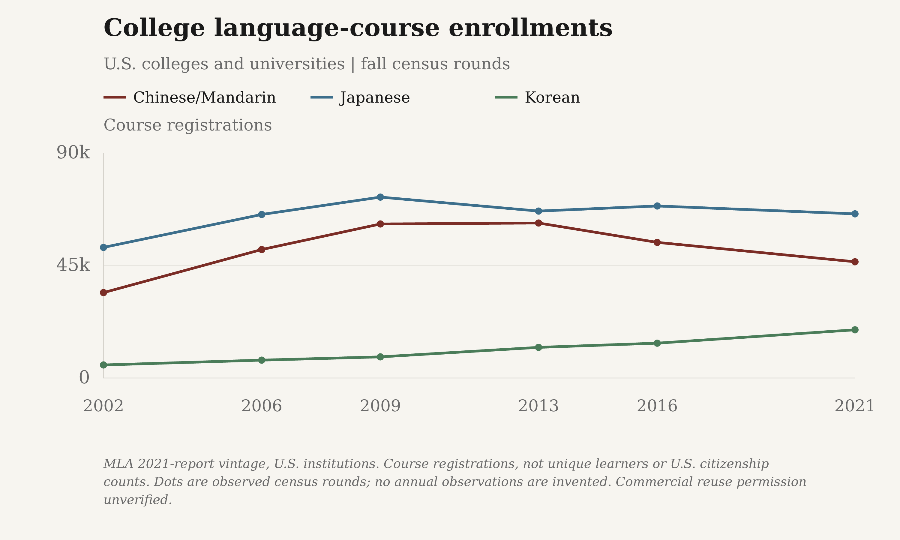
MLA 2021-report vintage, U.S. institutions. Course registrations, not unique learners or U.S. citizenship counts. Dots are observed census rounds; no annual observations are invented. Commercial reuse permission unverified.
Download reported values as a high-resolution PNG or editable SVG:
- The Margin of Error: PNG (3000 × 1800) · SVG
- Substack: PNG (3000 × 1800) · SVG


Exact reported and plotted values
| Series | Year / ending year | Reported count | Course registrations | Status | Source vintage |
|---|---|---|---|---|---|
| Chinese/Mandarin | 2002 | 34,153 | 34,153.0000 | observed | Fall 2021 census; report published 2023 |
| Chinese/Mandarin | 2006 | 51,382 | 51,382.0000 | observed | Fall 2021 census; report published 2023 |
| Chinese/Mandarin | 2009 | 61,612 | 61,612.0000 | observed | Fall 2021 census; report published 2023 |
| Chinese/Mandarin | 2013 | 61,997 | 61,997.0000 | observed | Fall 2021 census; report published 2023 |
| Chinese/Mandarin | 2016 | 54,248 | 54,248.0000 | observed | Fall 2021 census; report published 2023 |
| Chinese/Mandarin | 2021 | 46,492 | 46,492.0000 | observed | Fall 2021 census; report published 2023 |
| Japanese | 2002 | 52,238 | 52,238.0000 | observed | Fall 2021 census; report published 2023 |
| Japanese | 2006 | 65,410 | 65,410.0000 | observed | Fall 2021 census; report published 2023 |
| Japanese | 2009 | 72,357 | 72,357.0000 | observed | Fall 2021 census; report published 2023 |
| Japanese | 2013 | 66,771 | 66,771.0000 | observed | Fall 2021 census; report published 2023 |
| Japanese | 2016 | 68,810 | 68,810.0000 | observed | Fall 2021 census; report published 2023 |
| Japanese | 2021 | 65,661 | 65,661.0000 | observed | Fall 2021 census; report published 2023 |
| Korean | 2002 | 5,211 | 5,211.0000 | observed | Fall 2021 census; report published 2023 |
| Korean | 2006 | 7,146 | 7,146.0000 | observed | Fall 2021 census; report published 2023 |
| Korean | 2009 | 8,449 | 8,449.0000 | observed | Fall 2021 census; report published 2023 |
| Korean | 2013 | 12,256 | 12,256.0000 | observed | Fall 2021 census; report published 2023 |
| Korean | 2016 | 13,936 | 13,936.0000 | observed | Fall 2021 census; report published 2023 |
| Korean | 2021 | 19,270 | 19,270.0000 | observed | Fall 2021 census; report published 2023 |
K-12 language-enrollment estimates
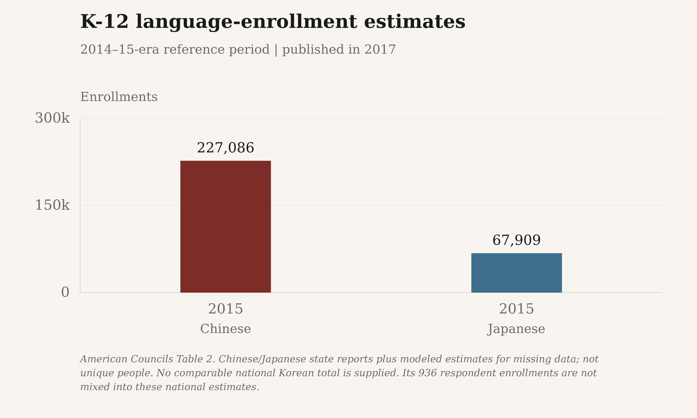
American Councils Table 2. Chinese/Japanese state reports plus modeled estimates for missing data; not unique people. No comparable national Korean total is supplied. Its 936 respondent enrollments are not mixed into these national estimates.
Download reported values as a high-resolution PNG or editable SVG:
- The Margin of Error: PNG (3000 × 1800) · SVG
- Substack: PNG (3000 × 1800) · SVG


Exact reported and plotted values
| Series | Year / ending year | Reported count | Enrollments | Status | Source vintage |
|---|---|---|---|---|---|
| Chinese | 2015 | 227,086 | 227,086.0000 | estimated | June 2017 K-16 survey report |
| Japanese | 2015 | 67,909 | 67,909.0000 | estimated | National K-12 Foreign Language Enrollment Survey, June 2017 |
Language classes in public schools
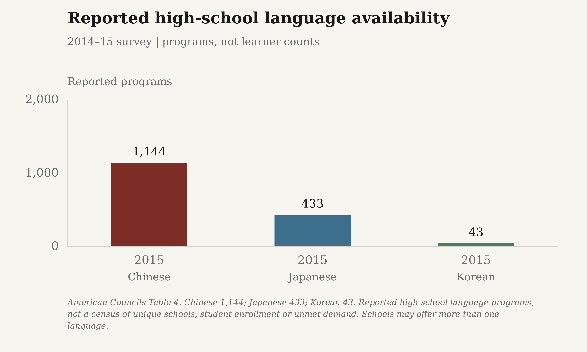
NCES School Pulse Panel, January 2024; experimental national estimates. All U.S. public schools are the denominator; Chinese includes Mandarin or Cantonese. Standard errors: Chinese 0.4pp, Japanese 0.3pp. Korean is below reporting standards, not zero. Course offerings are not student enrollments.
Download reported values as a high-resolution PNG or editable SVG:
- The Margin of Error: PNG (3000 × 1800) · SVG
- Substack: PNG (3000 × 1800) · SVG


Exact reported and plotted values
| Series | Year / ending year | Reported count | Percent | Status | Source vintage |
|---|---|---|---|---|---|
| Chinese | 2024 | 3 | 3.0000 | estimated | School Pulse Panel; January 2024 collection, 2023-24 school year |
| Japanese | 2024 | 1 | 1.0000 | estimated | School Pulse Panel; January 2024 collection, 2023-24 school year |


Language study in context
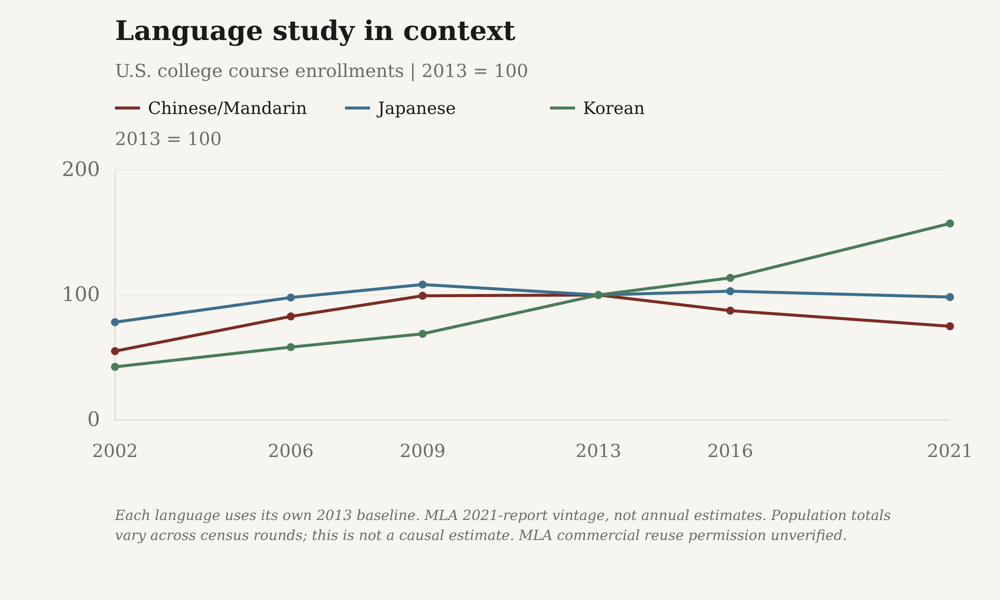
Each language uses its own 2013 baseline. MLA 2021-report vintage, not annual estimates. Population totals vary across census rounds; this is not a causal estimate.
Download reported values as a high-resolution PNG or editable SVG:
- The Margin of Error: PNG (3000 × 1800) · SVG
- Substack: PNG (3000 × 1800) · SVG


Exact reported and plotted values
| Series | Year / ending year | Reported count | 2013 = 100 | Status | Source vintage |
|---|---|---|---|---|---|
| Chinese/Mandarin | 2002 | 34,153 | 55.0881 | observed | Fall 2021 census; report published 2023 |
| Chinese/Mandarin | 2006 | 51,382 | 82.8782 | observed | Fall 2021 census; report published 2023 |
| Chinese/Mandarin | 2009 | 61,612 | 99.3790 | observed | Fall 2021 census; report published 2023 |
| Chinese/Mandarin | 2013 | 61,997 | 100.0000 | observed | Fall 2021 census; report published 2023 |
| Chinese/Mandarin | 2016 | 54,248 | 87.5010 | observed | Fall 2021 census; report published 2023 |
| Chinese/Mandarin | 2021 | 46,492 | 74.9907 | observed | Fall 2021 census; report published 2023 |
| Japanese | 2002 | 52,238 | 78.2346 | observed | Fall 2021 census; report published 2023 |
| Japanese | 2006 | 65,410 | 97.9617 | observed | Fall 2021 census; report published 2023 |
| Japanese | 2009 | 72,357 | 108.3659 | observed | Fall 2021 census; report published 2023 |
| Japanese | 2013 | 66,771 | 100.0000 | observed | Fall 2021 census; report published 2023 |
| Japanese | 2016 | 68,810 | 103.0537 | observed | Fall 2021 census; report published 2023 |
| Japanese | 2021 | 65,661 | 98.3376 | observed | Fall 2021 census; report published 2023 |
| Korean | 2002 | 5,211 | 42.5180 | observed | Fall 2021 census; report published 2023 |
| Korean | 2006 | 7,146 | 58.3061 | observed | Fall 2021 census; report published 2023 |
| Korean | 2009 | 8,449 | 68.9377 | observed | Fall 2021 census; report published 2023 |
| Korean | 2013 | 12,256 | 100.0000 | observed | Fall 2021 census; report published 2023 |
| Korean | 2016 | 13,936 | 113.7076 | observed | Fall 2021 census; report published 2023 |
| Korean | 2021 | 19,270 | 157.2291 | observed | Fall 2021 census; report published 2023 |
The same responding institutions
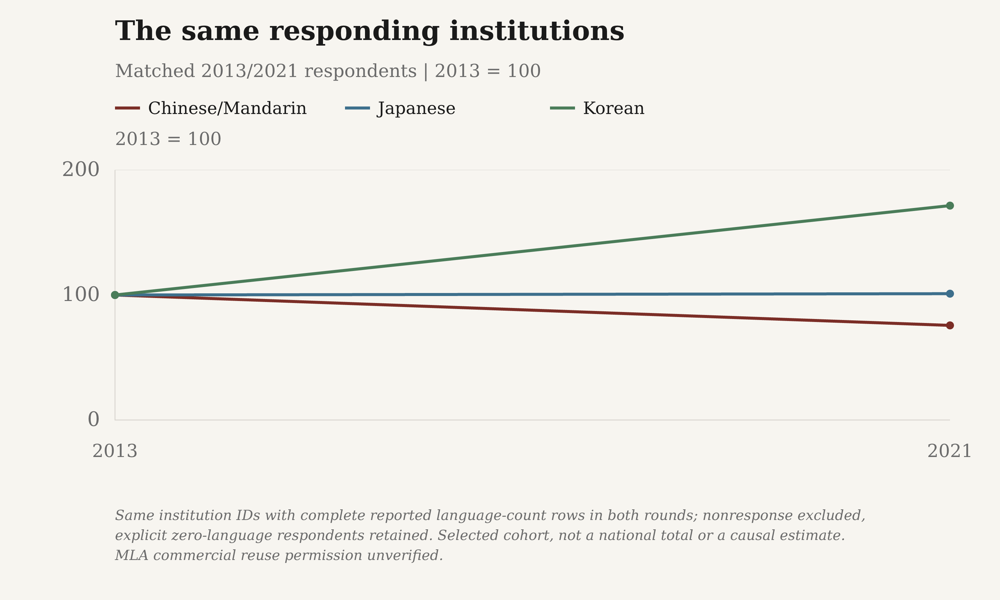
Same institution IDs with complete reported language-count rows in both rounds; nonresponse excluded, explicit zero-language respondents retained. Selected cohort, not a national total or a causal estimate.
Download reported values as a high-resolution PNG or editable SVG:
- The Margin of Error: PNG (3000 × 1800) · SVG
- Substack: PNG (3000 × 1800) · SVG


Exact reported and plotted values
| Series | Year / ending year | Reported count | 2013 = 100 | Status | Source vintage |
|---|---|---|---|---|---|
| Chinese/Mandarin | 2013 | 58,168 | 100.0000 | observed | Historical workbook retrieved for 2013/2021 matched panel |
| Chinese/Mandarin | 2021 | 44,026 | 75.6877 | observed | Historical workbook retrieved for 2013/2021 matched panel |
| Japanese | 2013 | 61,667 | 100.0000 | observed | Historical workbook retrieved for 2013/2021 matched panel |
| Japanese | 2021 | 62,317 | 101.0540 | observed | Historical workbook retrieved for 2013/2021 matched panel |
| Korean | 2013 | 10,315 | 100.0000 | observed | Historical workbook retrieved for 2013/2021 matched panel |
| Korean | 2021 | 17,691 | 171.5075 | observed | Historical workbook retrieved for 2013/2021 matched panel |
AP Chinese and Japanese participation
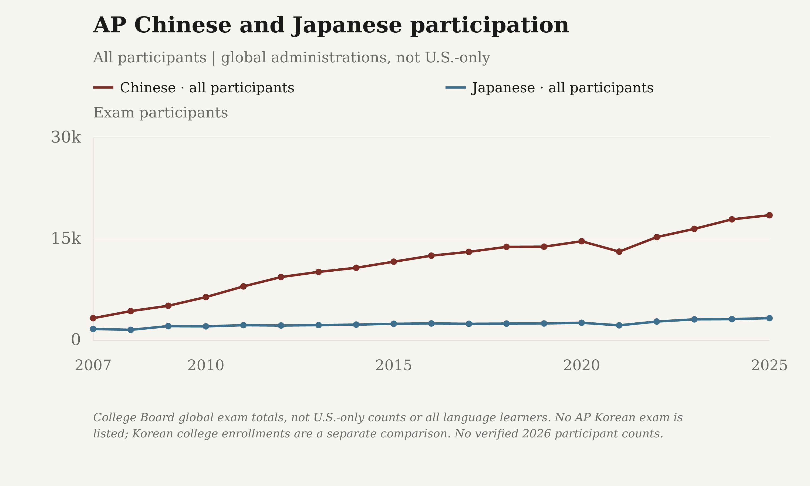
College Board global exam totals, not U.S.-only counts or all language learners. No AP Korean exam is listed; Korean college enrollments are a separate comparison. No verified 2026 participant counts.
Download reported values as a high-resolution PNG or editable SVG:
- The Margin of Error: PNG (3000 × 1800) · SVG
- Substack: PNG (3000 × 1800) · SVG


Exact reported and plotted values
| Series | Year / ending year | Reported count | Exam participants | Status | Source vintage |
|---|---|---|---|---|---|
| Chinese · all participants | 2007 | 3,261 | 3,261.0000 | observed | AP exam-volume report 2007–2017 |
| Chinese · all participants | 2008 | 4,311 | 4,311.0000 | observed | AP exam-volume report 2007–2017 |
| Chinese · all participants | 2009 | 5,100 | 5,100.0000 | observed | AP exam-volume report 2007–2017 |
| Chinese · all participants | 2010 | 6,388 | 6,388.0000 | observed | AP exam-volume report 2007–2017 |
| Chinese · all participants | 2011 | 7,970 | 7,970.0000 | observed | AP exam-volume report 2007–2017 |
| Chinese · all participants | 2012 | 9,357 | 9,357.0000 | observed | AP exam-volume report 2007–2017 |
| Chinese · all participants | 2013 | 10,121 | 10,121.0000 | observed | AP exam-volume report through 2023 |
| Chinese · all participants | 2014 | 10,728 | 10,728.0000 | observed | AP exam-volume report through 2024 |
| Chinese · all participants | 2015 | 11,633 | 11,633.0000 | observed | AP exam-volume report through 2024 |
| Chinese · all participants | 2016 | 12,524 | 12,524.0000 | observed | AP exam-volume report through 2024 |
| Chinese · all participants | 2017 | 13,091 | 13,091.0000 | observed | AP exam-volume report through 2024 |
| Chinese · all participants | 2018 | 13,825 | 13,825.0000 | observed | AP exam-volume report through 2024 |
| Chinese · all participants | 2019 | 13,853 | 13,853.0000 | observed | AP exam-volume report through 2024 |
| Chinese · all participants | 2020 | 14,663 | 14,663.0000 | observed | AP exam-volume report through 2024 |
| Chinese · all participants | 2021 | 13,122 | 13,122.0000 | observed | AP exam-volume report through 2024 |
| Chinese · all participants | 2022 | 15,277 | 15,277.0000 | observed | AP exam-volume report through 2024 |
| Chinese · all participants | 2023 | 16,495 | 16,495.0000 | observed | AP Chinese score distributions, May 2023 |
| Chinese · all participants | 2024 | 17,905 | 17,905.0000 | observed | AP Chinese score distributions, May 2024 |
| Chinese · all participants | 2025 | 18,518 | 18,518.0000 | observed | AP Chinese score distributions, May 2025 |
| Japanese · all participants | 2007 | 1,667 | 1,667.0000 | observed | AP exam-volume report 2007–2017 |
| Japanese · all participants | 2008 | 1,538 | 1,538.0000 | observed | AP exam-volume report 2007–2017 |
| Japanese · all participants | 2009 | 2,085 | 2,085.0000 | observed | AP exam-volume report 2007–2017 |
| Japanese · all participants | 2010 | 2,051 | 2,051.0000 | observed | AP exam-volume report 2007–2017 |
| Japanese · all participants | 2011 | 2,226 | 2,226.0000 | observed | AP exam-volume report 2007–2017 |
| Japanese · all participants | 2012 | 2,177 | 2,177.0000 | observed | AP exam-volume report 2007–2017 |
| Japanese · all participants | 2013 | 2,234 | 2,234.0000 | observed | AP exam-volume report through 2023 |
| Japanese · all participants | 2014 | 2,311 | 2,311.0000 | observed | AP exam-volume report through 2024 |
| Japanese · all participants | 2015 | 2,431 | 2,431.0000 | observed | AP exam-volume report through 2024 |
| Japanese · all participants | 2016 | 2,481 | 2,481.0000 | observed | AP exam-volume report through 2024 |
| Japanese · all participants | 2017 | 2,429 | 2,429.0000 | observed | AP exam-volume report through 2024 |
| Japanese · all participants | 2018 | 2,459 | 2,459.0000 | observed | AP exam-volume report through 2024 |
| Japanese · all participants | 2019 | 2,479 | 2,479.0000 | observed | AP exam-volume report through 2024 |
| Japanese · all participants | 2020 | 2,581 | 2,581.0000 | observed | AP exam-volume report through 2024 |
| Japanese · all participants | 2021 | 2,204 | 2,204.0000 | observed | AP exam-volume report through 2024 |
| Japanese · all participants | 2022 | 2,765 | 2,765.0000 | observed | AP exam-volume report through 2024 |
| Japanese · all participants | 2023 | 3,089 | 3,089.0000 | observed | AP Japanese score distributions, May 2023 |
| Japanese · all participants | 2024 | 3,125 | 3,125.0000 | observed | AP Japanese score distributions, May 2024 |
| Japanese · all participants | 2025 | 3,269 | 3,269.0000 | observed | AP Japanese score distributions, May 2025 |
AP Chinese in U.S. public-school cohorts
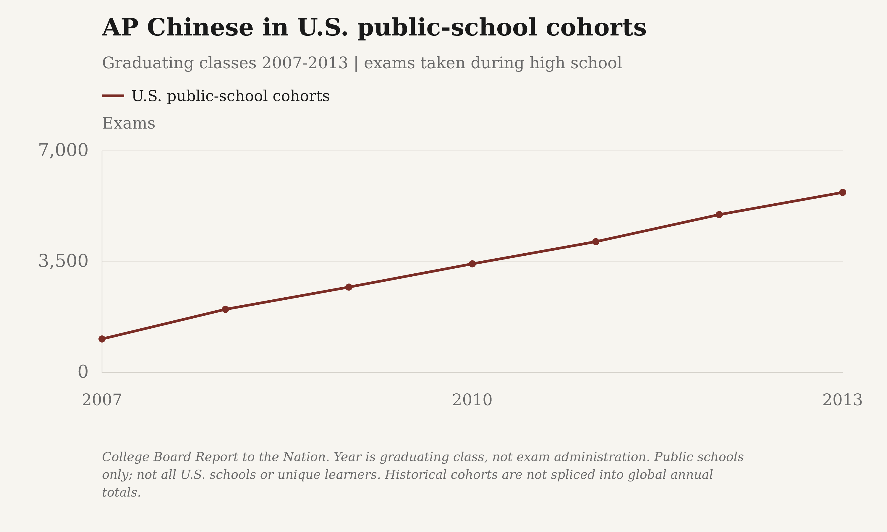
College Board Report to the Nation. Year is graduating class, not exam administration. Public schools only; not all U.S. schools or unique learners. Historical cohorts are not spliced into global annual totals.
Download reported values as a high-resolution PNG or editable SVG:
- The Margin of Error: PNG (3000 × 1800) · SVG
- Substack: PNG (3000 × 1800) · SVG


Exact reported and plotted values
| Series | Year / ending year | Reported count | Exams | Status | Source vintage |
|---|---|---|---|---|---|
| U.S. public-school cohorts | 2007 | 1,056 | 1,056.0000 | observed | Report to the Nation 2013; U.S. public-school graduating cohorts |
| U.S. public-school cohorts | 2008 | 1,992 | 1,992.0000 | observed | Report to the Nation 2014; U.S. public-school graduating cohorts |
| U.S. public-school cohorts | 2009 | 2,694 | 2,694.0000 | observed | Report to the Nation 2011; U.S. public-school graduating cohorts |
| U.S. public-school cohorts | 2010 | 3,428 | 3,428.0000 | observed | Report to the Nation 2011; U.S. public-school graduating cohorts |
| U.S. public-school cohorts | 2011 | 4,128 | 4,128.0000 | observed | Report to the Nation 2013; U.S. public-school graduating cohorts |
| U.S. public-school cohorts | 2012 | 4,983 | 4,983.0000 | observed | Report to the Nation 2014; U.S. public-school graduating cohorts |
| U.S. public-school cohorts | 2013 | 5,684 | 5,684.0000 | observed | Report to the Nation 2014; U.S. public-school graduating cohorts |
Bachelor's awards by language
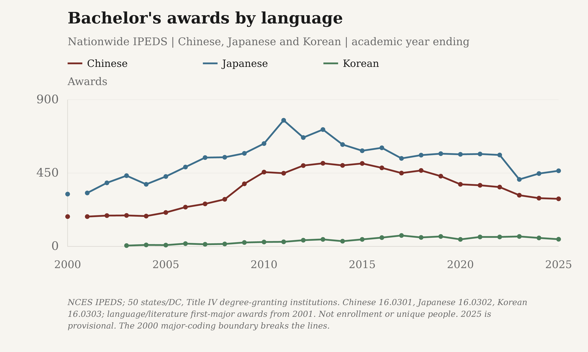
NCES IPEDS; 50 states/DC, Title IV degree-granting institutions. Chinese 16.0301, Japanese 16.0302, Korean 16.0303; language/literature first-major awards from 2001. Not enrollment or unique people. 2025 is provisional. The 2000 major-coding boundary breaks the lines.
Download reported values as a high-resolution PNG or editable SVG:
- The Margin of Error: PNG (3000 × 1800) · SVG
- Substack: PNG (3000 × 1800) · SVG


Exact reported and plotted values
| Series | Year / ending year | Reported count | Awards | Status | Source vintage |
|---|---|---|---|---|---|
| Chinese | 2000 | 183 | 183.0000 | reported_or_imputed | Completions survey 2000 |
| Chinese | 2001 | 183 | 183.0000 | reported_or_imputed | Completions survey 2001 |
| Chinese | 2002 | 189 | 189.0000 | reported_or_imputed | Completions survey 2002 |
| Chinese | 2003 | 190 | 190.0000 | reported_or_imputed | Completions survey 2003 |
| Chinese | 2004 | 186 | 186.0000 | reported_or_imputed | Completions survey 2004 |
| Chinese | 2005 | 208 | 208.0000 | reported_or_imputed | Completions survey 2005 |
| Chinese | 2006 | 241 | 241.0000 | reported_or_imputed | Completions survey 2006 |
| Chinese | 2007 | 261 | 261.0000 | reported_or_imputed | Completions survey 2007 |
| Chinese | 2008 | 289 | 289.0000 | reported_or_imputed | Completions survey 2008 |
| Chinese | 2009 | 384 | 384.0000 | reported_or_imputed | Completions survey 2009 |
| Chinese | 2010 | 456 | 456.0000 | reported_or_imputed | Completions survey 2010 |
| Chinese | 2011 | 449 | 449.0000 | reported_or_imputed | Completions survey 2011 |
| Chinese | 2012 | 496 | 496.0000 | reported_or_imputed | Completions survey 2012 |
| Chinese | 2013 | 510 | 510.0000 | reported_or_imputed | Completions survey 2013 |
| Chinese | 2014 | 497 | 497.0000 | reported_or_imputed | Completions survey 2014 |
| Chinese | 2015 | 509 | 509.0000 | reported_or_imputed | Completions survey 2015 |
| Chinese | 2016 | 482 | 482.0000 | reported_or_imputed | Completions survey 2016 |
| Chinese | 2017 | 450 | 450.0000 | reported_or_imputed | Completions survey 2017 |
| Chinese | 2018 | 466 | 466.0000 | reported_or_imputed | Completions survey 2018 |
| Chinese | 2019 | 431 | 431.0000 | reported_or_imputed | Completions survey 2019 |
| Chinese | 2020 | 381 | 381.0000 | reported_or_imputed | Completions survey 2020 |
| Chinese | 2021 | 375 | 375.0000 | reported_or_imputed | Completions survey 2021 |
| Chinese | 2022 | 364 | 364.0000 | reported_or_imputed | Completions survey 2022 |
| Chinese | 2023 | 314 | 314.0000 | reported_or_imputed | Completions survey 2023 |
| Chinese | 2024 | 296 | 296.0000 | reported_or_imputed | Completions survey 2024 |
| Chinese | 2025 | 292 | 292.0000 | reported_or_imputed | Completions survey 2025; provisional 2024/25 release, July 28, 2026 |
| Japanese | 2000 | 321 | 321.0000 | reported_or_imputed | Completions survey 2000 |
| Japanese | 2001 | 328 | 328.0000 | reported_or_imputed | Completions survey 2001 |
| Japanese | 2002 | 390 | 390.0000 | reported_or_imputed | Completions survey 2002 |
| Japanese | 2003 | 434 | 434.0000 | reported_or_imputed | Completions survey 2003 |
| Japanese | 2004 | 381 | 381.0000 | reported_or_imputed | Completions survey 2004 |
| Japanese | 2005 | 429 | 429.0000 | reported_or_imputed | Completions survey 2005 |
| Japanese | 2006 | 487 | 487.0000 | reported_or_imputed | Completions survey 2006 |
| Japanese | 2007 | 545 | 545.0000 | reported_or_imputed | Completions survey 2007 |
| Japanese | 2008 | 547 | 547.0000 | reported_or_imputed | Completions survey 2008 |
| Japanese | 2009 | 571 | 571.0000 | reported_or_imputed | Completions survey 2009 |
| Japanese | 2010 | 631 | 631.0000 | reported_or_imputed | Completions survey 2010 |
| Japanese | 2011 | 774 | 774.0000 | reported_or_imputed | Completions survey 2011 |
| Japanese | 2012 | 668 | 668.0000 | reported_or_imputed | Completions survey 2012 |
| Japanese | 2013 | 717 | 717.0000 | reported_or_imputed | Completions survey 2013 |
| Japanese | 2014 | 625 | 625.0000 | reported_or_imputed | Completions survey 2014 |
| Japanese | 2015 | 587 | 587.0000 | reported_or_imputed | Completions survey 2015 |
| Japanese | 2016 | 605 | 605.0000 | reported_or_imputed | Completions survey 2016 |
| Japanese | 2017 | 540 | 540.0000 | reported_or_imputed | Completions survey 2017 |
| Japanese | 2018 | 560 | 560.0000 | reported_or_imputed | Completions survey 2018 |
| Japanese | 2019 | 569 | 569.0000 | reported_or_imputed | Completions survey 2019 |
| Japanese | 2020 | 565 | 565.0000 | reported_or_imputed | Completions survey 2020 |
| Japanese | 2021 | 567 | 567.0000 | reported_or_imputed | Completions survey 2021 |
| Japanese | 2022 | 561 | 561.0000 | reported_or_imputed | Completions survey 2022 |
| Japanese | 2023 | 411 | 411.0000 | reported_or_imputed | Completions survey 2023 |
| Japanese | 2024 | 447 | 447.0000 | reported_or_imputed | Completions survey 2024 |
| Japanese | 2025 | 464 | 464.0000 | reported_or_imputed | Completions survey 2025; provisional 2024/25 release, July 28, 2026 |
| Korean | 2003 | 5 | 5.0000 | reported_or_imputed | Completions survey 2003 |
| Korean | 2004 | 9 | 9.0000 | reported_or_imputed | Completions survey 2004 |
| Korean | 2005 | 8 | 8.0000 | reported_or_imputed | Completions survey 2005 |
| Korean | 2006 | 17 | 17.0000 | reported_or_imputed | Completions survey 2006 |
| Korean | 2007 | 13 | 13.0000 | reported_or_imputed | Completions survey 2007 |
| Korean | 2008 | 15 | 15.0000 | reported_or_imputed | Completions survey 2008 |
| Korean | 2009 | 24 | 24.0000 | reported_or_imputed | Completions survey 2009 |
| Korean | 2010 | 27 | 27.0000 | reported_or_imputed | Completions survey 2010 |
| Korean | 2011 | 28 | 28.0000 | reported_or_imputed | Completions survey 2011 |
| Korean | 2012 | 38 | 38.0000 | reported_or_imputed | Completions survey 2012 |
| Korean | 2013 | 43 | 43.0000 | reported_or_imputed | Completions survey 2013 |
| Korean | 2014 | 32 | 32.0000 | reported_or_imputed | Completions survey 2014 |
| Korean | 2015 | 43 | 43.0000 | reported_or_imputed | Completions survey 2015 |
| Korean | 2016 | 54 | 54.0000 | reported_or_imputed | Completions survey 2016 |
| Korean | 2017 | 67 | 67.0000 | reported_or_imputed | Completions survey 2017 |
| Korean | 2018 | 55 | 55.0000 | reported_or_imputed | Completions survey 2018 |
| Korean | 2019 | 61 | 61.0000 | reported_or_imputed | Completions survey 2019 |
| Korean | 2020 | 43 | 43.0000 | reported_or_imputed | Completions survey 2020 |
| Korean | 2021 | 58 | 58.0000 | reported_or_imputed | Completions survey 2021 |
| Korean | 2022 | 58 | 58.0000 | reported_or_imputed | Completions survey 2022 |
| Korean | 2023 | 61 | 61.0000 | reported_or_imputed | Completions survey 2023 |
| Korean | 2024 | 52 | 52.0000 | reported_or_imputed | Completions survey 2024 |
| Korean | 2025 | 44 | 44.0000 | reported_or_imputed | Completions survey 2025; provisional 2024/25 release, July 28, 2026 |
Master's awards by language
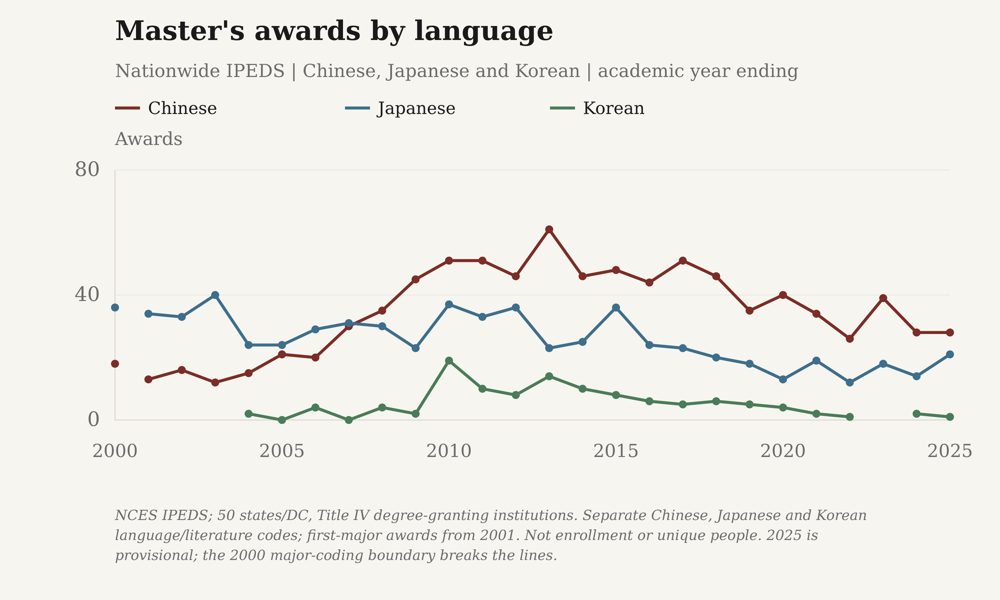
NCES IPEDS; 50 states/DC, Title IV degree-granting institutions. Separate Chinese, Japanese and Korean language/literature codes; first-major awards from 2001. Not enrollment or unique people. 2025 is provisional; the 2000 major-coding boundary breaks the lines.
Download reported values as a high-resolution PNG or editable SVG:
- The Margin of Error: PNG (3000 × 1800) · SVG
- Substack: PNG (3000 × 1800) · SVG


Exact reported and plotted values
| Series | Year / ending year | Reported count | Awards | Status | Source vintage |
|---|---|---|---|---|---|
| Chinese | 2000 | 18 | 18.0000 | reported_or_imputed | Completions survey 2000 |
| Chinese | 2001 | 13 | 13.0000 | reported_or_imputed | Completions survey 2001 |
| Chinese | 2002 | 16 | 16.0000 | reported_or_imputed | Completions survey 2002 |
| Chinese | 2003 | 12 | 12.0000 | reported_or_imputed | Completions survey 2003 |
| Chinese | 2004 | 15 | 15.0000 | reported_or_imputed | Completions survey 2004 |
| Chinese | 2005 | 21 | 21.0000 | reported_or_imputed | Completions survey 2005 |
| Chinese | 2006 | 20 | 20.0000 | reported_or_imputed | Completions survey 2006 |
| Chinese | 2007 | 30 | 30.0000 | reported_or_imputed | Completions survey 2007 |
| Chinese | 2008 | 35 | 35.0000 | reported_or_imputed | Completions survey 2008 |
| Chinese | 2009 | 45 | 45.0000 | reported_or_imputed | Completions survey 2009 |
| Chinese | 2010 | 51 | 51.0000 | reported_or_imputed | Completions survey 2010 |
| Chinese | 2011 | 51 | 51.0000 | reported_or_imputed | Completions survey 2011 |
| Chinese | 2012 | 46 | 46.0000 | reported_or_imputed | Completions survey 2012 |
| Chinese | 2013 | 61 | 61.0000 | reported_or_imputed | Completions survey 2013 |
| Chinese | 2014 | 46 | 46.0000 | reported_or_imputed | Completions survey 2014 |
| Chinese | 2015 | 48 | 48.0000 | reported_or_imputed | Completions survey 2015 |
| Chinese | 2016 | 44 | 44.0000 | reported_or_imputed | Completions survey 2016 |
| Chinese | 2017 | 51 | 51.0000 | reported_or_imputed | Completions survey 2017 |
| Chinese | 2018 | 46 | 46.0000 | reported_or_imputed | Completions survey 2018 |
| Chinese | 2019 | 35 | 35.0000 | reported_or_imputed | Completions survey 2019 |
| Chinese | 2020 | 40 | 40.0000 | reported_or_imputed | Completions survey 2020 |
| Chinese | 2021 | 34 | 34.0000 | reported_or_imputed | Completions survey 2021 |
| Chinese | 2022 | 26 | 26.0000 | reported_or_imputed | Completions survey 2022 |
| Chinese | 2023 | 39 | 39.0000 | reported_or_imputed | Completions survey 2023 |
| Chinese | 2024 | 28 | 28.0000 | reported_or_imputed | Completions survey 2024 |
| Chinese | 2025 | 28 | 28.0000 | reported_or_imputed | Completions survey 2025; provisional 2024/25 release, July 28, 2026 |
| Japanese | 2000 | 36 | 36.0000 | reported_or_imputed | Completions survey 2000 |
| Japanese | 2001 | 34 | 34.0000 | reported_or_imputed | Completions survey 2001 |
| Japanese | 2002 | 33 | 33.0000 | reported_or_imputed | Completions survey 2002 |
| Japanese | 2003 | 40 | 40.0000 | reported_or_imputed | Completions survey 2003 |
| Japanese | 2004 | 24 | 24.0000 | reported_or_imputed | Completions survey 2004 |
| Japanese | 2005 | 24 | 24.0000 | reported_or_imputed | Completions survey 2005 |
| Japanese | 2006 | 29 | 29.0000 | reported_or_imputed | Completions survey 2006 |
| Japanese | 2007 | 31 | 31.0000 | reported_or_imputed | Completions survey 2007 |
| Japanese | 2008 | 30 | 30.0000 | reported_or_imputed | Completions survey 2008 |
| Japanese | 2009 | 23 | 23.0000 | reported_or_imputed | Completions survey 2009 |
| Japanese | 2010 | 37 | 37.0000 | reported_or_imputed | Completions survey 2010 |
| Japanese | 2011 | 33 | 33.0000 | reported_or_imputed | Completions survey 2011 |
| Japanese | 2012 | 36 | 36.0000 | reported_or_imputed | Completions survey 2012 |
| Japanese | 2013 | 23 | 23.0000 | reported_or_imputed | Completions survey 2013 |
| Japanese | 2014 | 25 | 25.0000 | reported_or_imputed | Completions survey 2014 |
| Japanese | 2015 | 36 | 36.0000 | reported_or_imputed | Completions survey 2015 |
| Japanese | 2016 | 24 | 24.0000 | reported_or_imputed | Completions survey 2016 |
| Japanese | 2017 | 23 | 23.0000 | reported_or_imputed | Completions survey 2017 |
| Japanese | 2018 | 20 | 20.0000 | reported_or_imputed | Completions survey 2018 |
| Japanese | 2019 | 18 | 18.0000 | reported_or_imputed | Completions survey 2019 |
| Japanese | 2020 | 13 | 13.0000 | reported_or_imputed | Completions survey 2020 |
| Japanese | 2021 | 19 | 19.0000 | reported_or_imputed | Completions survey 2021 |
| Japanese | 2022 | 12 | 12.0000 | reported_or_imputed | Completions survey 2022 |
| Japanese | 2023 | 18 | 18.0000 | reported_or_imputed | Completions survey 2023 |
| Japanese | 2024 | 14 | 14.0000 | reported_or_imputed | Completions survey 2024 |
| Japanese | 2025 | 21 | 21.0000 | reported_or_imputed | Completions survey 2025; provisional 2024/25 release, July 28, 2026 |
| Korean | 2004 | 2 | 2.0000 | reported_or_imputed | Completions survey 2004 |
| Korean | 2005 | 0 | 0.0000 | reported_or_imputed | Completions survey 2005 |
| Korean | 2006 | 4 | 4.0000 | reported_or_imputed | Completions survey 2006 |
| Korean | 2007 | 0 | 0.0000 | reported_or_imputed | Completions survey 2007 |
| Korean | 2008 | 4 | 4.0000 | reported_or_imputed | Completions survey 2008 |
| Korean | 2009 | 2 | 2.0000 | reported_or_imputed | Completions survey 2009 |
| Korean | 2010 | 19 | 19.0000 | reported_or_imputed | Completions survey 2010 |
| Korean | 2011 | 10 | 10.0000 | reported_or_imputed | Completions survey 2011 |
| Korean | 2012 | 8 | 8.0000 | reported_or_imputed | Completions survey 2012 |
| Korean | 2013 | 14 | 14.0000 | reported_or_imputed | Completions survey 2013 |
| Korean | 2014 | 10 | 10.0000 | reported_or_imputed | Completions survey 2014 |
| Korean | 2015 | 8 | 8.0000 | reported_or_imputed | Completions survey 2015 |
| Korean | 2016 | 6 | 6.0000 | reported_or_imputed | Completions survey 2016 |
| Korean | 2017 | 5 | 5.0000 | reported_or_imputed | Completions survey 2017 |
| Korean | 2018 | 6 | 6.0000 | reported_or_imputed | Completions survey 2018 |
| Korean | 2019 | 5 | 5.0000 | reported_or_imputed | Completions survey 2019 |
| Korean | 2020 | 4 | 4.0000 | reported_or_imputed | Completions survey 2020 |
| Korean | 2021 | 2 | 2.0000 | reported_or_imputed | Completions survey 2021 |
| Korean | 2022 | 1 | 1.0000 | reported_or_imputed | Completions survey 2022 |
| Korean | 2024 | 2 | 2.0000 | reported_or_imputed | Completions survey 2024 |
| Korean | 2025 | 1 | 1.0000 | reported_or_imputed | Completions survey 2025; provisional 2024/25 release, July 28, 2026 |
Doctoral awards by language
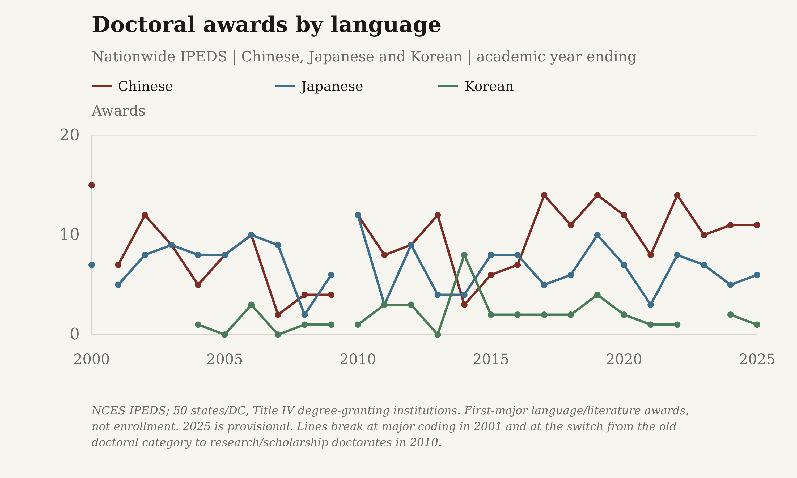
NCES IPEDS; 50 states/DC, Title IV degree-granting institutions. First-major language/literature awards, not enrollment. 2025 is provisional. Lines break at major coding in 2001 and at the switch from the old doctoral category to research/scholarship doctorates in 2010.
Download reported values as a high-resolution PNG or editable SVG:
- The Margin of Error: PNG (3000 × 1800) · SVG
- Substack: PNG (3000 × 1800) · SVG


Exact reported and plotted values
| Series | Year / ending year | Reported count | Awards | Status | Source vintage |
|---|---|---|---|---|---|
| Chinese | 2000 | 15 | 15.0000 | reported_or_imputed | Completions survey 2000 |
| Chinese | 2001 | 7 | 7.0000 | reported_or_imputed | Completions survey 2001 |
| Chinese | 2002 | 12 | 12.0000 | reported_or_imputed | Completions survey 2002 |
| Chinese | 2003 | 9 | 9.0000 | reported_or_imputed | Completions survey 2003 |
| Chinese | 2004 | 5 | 5.0000 | reported_or_imputed | Completions survey 2004 |
| Chinese | 2005 | 8 | 8.0000 | reported_or_imputed | Completions survey 2005 |
| Chinese | 2006 | 10 | 10.0000 | reported_or_imputed | Completions survey 2006 |
| Chinese | 2007 | 2 | 2.0000 | reported_or_imputed | Completions survey 2007 |
| Chinese | 2008 | 4 | 4.0000 | reported_or_imputed | Completions survey 2008 |
| Chinese | 2009 | 4 | 4.0000 | reported_or_imputed | Completions survey 2009 |
| Chinese | 2010 | 12 | 12.0000 | reported_or_imputed | Completions survey 2010 |
| Chinese | 2011 | 8 | 8.0000 | reported_or_imputed | Completions survey 2011 |
| Chinese | 2012 | 9 | 9.0000 | reported_or_imputed | Completions survey 2012 |
| Chinese | 2013 | 12 | 12.0000 | reported_or_imputed | Completions survey 2013 |
| Chinese | 2014 | 3 | 3.0000 | reported_or_imputed | Completions survey 2014 |
| Chinese | 2015 | 6 | 6.0000 | reported_or_imputed | Completions survey 2015 |
| Chinese | 2016 | 7 | 7.0000 | reported_or_imputed | Completions survey 2016 |
| Chinese | 2017 | 14 | 14.0000 | reported_or_imputed | Completions survey 2017 |
| Chinese | 2018 | 11 | 11.0000 | reported_or_imputed | Completions survey 2018 |
| Chinese | 2019 | 14 | 14.0000 | reported_or_imputed | Completions survey 2019 |
| Chinese | 2020 | 12 | 12.0000 | reported_or_imputed | Completions survey 2020 |
| Chinese | 2021 | 8 | 8.0000 | reported_or_imputed | Completions survey 2021 |
| Chinese | 2022 | 14 | 14.0000 | reported_or_imputed | Completions survey 2022 |
| Chinese | 2023 | 10 | 10.0000 | reported_or_imputed | Completions survey 2023 |
| Chinese | 2024 | 11 | 11.0000 | reported_or_imputed | Completions survey 2024 |
| Chinese | 2025 | 11 | 11.0000 | reported_or_imputed | Completions survey 2025; provisional 2024/25 release, July 28, 2026 |
| Japanese | 2000 | 7 | 7.0000 | reported_or_imputed | Completions survey 2000 |
| Japanese | 2001 | 5 | 5.0000 | reported_or_imputed | Completions survey 2001 |
| Japanese | 2002 | 8 | 8.0000 | reported_or_imputed | Completions survey 2002 |
| Japanese | 2003 | 9 | 9.0000 | reported_or_imputed | Completions survey 2003 |
| Japanese | 2004 | 8 | 8.0000 | reported_or_imputed | Completions survey 2004 |
| Japanese | 2005 | 8 | 8.0000 | reported_or_imputed | Completions survey 2005 |
| Japanese | 2006 | 10 | 10.0000 | reported_or_imputed | Completions survey 2006 |
| Japanese | 2007 | 9 | 9.0000 | reported_or_imputed | Completions survey 2007 |
| Japanese | 2008 | 2 | 2.0000 | reported_or_imputed | Completions survey 2008 |
| Japanese | 2009 | 6 | 6.0000 | reported_or_imputed | Completions survey 2009 |
| Japanese | 2010 | 12 | 12.0000 | reported_or_imputed | Completions survey 2010 |
| Japanese | 2011 | 3 | 3.0000 | reported_or_imputed | Completions survey 2011 |
| Japanese | 2012 | 9 | 9.0000 | reported_or_imputed | Completions survey 2012 |
| Japanese | 2013 | 4 | 4.0000 | reported_or_imputed | Completions survey 2013 |
| Japanese | 2014 | 4 | 4.0000 | reported_or_imputed | Completions survey 2014 |
| Japanese | 2015 | 8 | 8.0000 | reported_or_imputed | Completions survey 2015 |
| Japanese | 2016 | 8 | 8.0000 | reported_or_imputed | Completions survey 2016 |
| Japanese | 2017 | 5 | 5.0000 | reported_or_imputed | Completions survey 2017 |
| Japanese | 2018 | 6 | 6.0000 | reported_or_imputed | Completions survey 2018 |
| Japanese | 2019 | 10 | 10.0000 | reported_or_imputed | Completions survey 2019 |
| Japanese | 2020 | 7 | 7.0000 | reported_or_imputed | Completions survey 2020 |
| Japanese | 2021 | 3 | 3.0000 | reported_or_imputed | Completions survey 2021 |
| Japanese | 2022 | 8 | 8.0000 | reported_or_imputed | Completions survey 2022 |
| Japanese | 2023 | 7 | 7.0000 | reported_or_imputed | Completions survey 2023 |
| Japanese | 2024 | 5 | 5.0000 | reported_or_imputed | Completions survey 2024 |
| Japanese | 2025 | 6 | 6.0000 | reported_or_imputed | Completions survey 2025; provisional 2024/25 release, July 28, 2026 |
| Korean | 2004 | 1 | 1.0000 | reported_or_imputed | Completions survey 2004 |
| Korean | 2005 | 0 | 0.0000 | reported_or_imputed | Completions survey 2005 |
| Korean | 2006 | 3 | 3.0000 | reported_or_imputed | Completions survey 2006 |
| Korean | 2007 | 0 | 0.0000 | reported_or_imputed | Completions survey 2007 |
| Korean | 2008 | 1 | 1.0000 | reported_or_imputed | Completions survey 2008 |
| Korean | 2009 | 1 | 1.0000 | reported_or_imputed | Completions survey 2009 |
| Korean | 2010 | 1 | 1.0000 | reported_or_imputed | Completions survey 2010 |
| Korean | 2011 | 3 | 3.0000 | reported_or_imputed | Completions survey 2011 |
| Korean | 2012 | 3 | 3.0000 | reported_or_imputed | Completions survey 2012 |
| Korean | 2013 | 0 | 0.0000 | reported_or_imputed | Completions survey 2013 |
| Korean | 2014 | 8 | 8.0000 | reported_or_imputed | Completions survey 2014 |
| Korean | 2015 | 2 | 2.0000 | reported_or_imputed | Completions survey 2015 |
| Korean | 2016 | 2 | 2.0000 | reported_or_imputed | Completions survey 2016 |
| Korean | 2017 | 2 | 2.0000 | reported_or_imputed | Completions survey 2017 |
| Korean | 2018 | 2 | 2.0000 | reported_or_imputed | Completions survey 2018 |
| Korean | 2019 | 4 | 4.0000 | reported_or_imputed | Completions survey 2019 |
| Korean | 2020 | 2 | 2.0000 | reported_or_imputed | Completions survey 2020 |
| Korean | 2021 | 1 | 1.0000 | reported_or_imputed | Completions survey 2021 |
| Korean | 2022 | 1 | 1.0000 | reported_or_imputed | Completions survey 2022 |
| Korean | 2024 | 2 | 2.0000 | reported_or_imputed | Completions survey 2024 |
| Korean | 2025 | 1 | 1.0000 | reported_or_imputed | Completions survey 2025; provisional 2024/25 release, July 28, 2026 |
Mandarin immersion program inventories
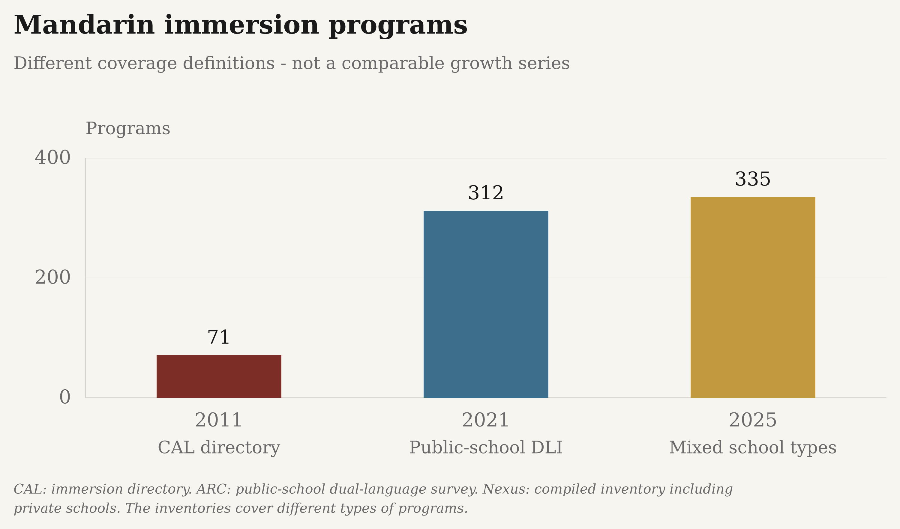
CAL: immersion directory. ARC: public-school DLI canvass. Nexus: compiled inventory including private schools. Different universes and methods; no growth rate or connecting trend is calculated.
Download reported values as a high-resolution PNG or editable SVG:
- The Margin of Error: PNG (3000 × 1800) · SVG
- Substack: PNG (3000 × 1800) · SVG


Exact reported and plotted values
| Series | Year / ending year | Reported count | Programs | Status | Source vintage |
|---|---|---|---|---|---|
| CAL directory | 2011 | 71 | 71.0000 | observed | 2011 program inventory |
| Public-school DLI | 2021 | 312 | 312.0000 | observed | 2021 program inventory |
| Mixed school types | 2025 | 335 | 335.0000 | observed | 2025 survey and directory; published 2026 |
School-age evidence and its limits
The separate 2014-15-era K-12 survey estimated 227,086 Chinese enrollments, combining reported and modeled state data. It is not a current census and excludes substantial community/heritage and summer-school coverage.
The same national-estimate table reports 67,909 Japanese enrollments but no comparable Korean total. Its separate reported high-school program counts measure availability, not the number of learners or unmet demand.
The report identifies 936 Korean-class enrollments among 43 reporting schools across 22 states. This respondent-only count is retained in the complete download, not plotted as a national estimate alongside Chinese and Japanese.
Nexus reports 335 programs in its 2025 U.S. inventory. Its survey received 102 U.S. responses plus one from Hong Kong. The 34,341 respondent-associated enrollments therefore do not become a U.S. national learner estimate here. Program counts and survey-response counts remain distinct.
The 2011, 2021 and 2025 inventories use different coverage definitions. Their bars are separate snapshots, not evidence of a calculated growth rate. Establishment-year responses among surviving survey respondents are not reconstructed counts of programs active in earlier years.
Coverage and unresolved comparisons
| Indicator | Coverage | Definition and limitation |
|---|---|---|
| college census | available | Fall census rounds 2002, 2006, 2009, 2013, 2016 and 2021; one report vintage, no annual interpolation. |
| matched colleges | available | Matched 2013/2021 institution IDs with complete reported language-count rows; nonresponse and partial-count responses excluded, explicit zero-language institutions retained. |
| ap global | available | Global AP Chinese and Japanese counts and standard-group subsets, 2007-2025; not U.S.-only. No verified 2026 participant counts. |
| ap us cohorts | historical_only | U.S. public-school graduating classes 2007-2013, counting exams taken during high school. Not the year of exam administration or all U.S. schools. |
| degree awards | available | Annual Chinese, Japanese and Korean IPEDS awards from academic year ending 2000 through 2025; first major from 2001, 50 states/DC and Title IV degree-granting institutions. |
| immersion programs | snapshots_only | CAL 2011 directory, ARC 2021 public-school canvass and Nexus 2025 mixed-school inventory have different universes; no comparable growth rate. |
| k12 learners | estimate_only | 2014-15-era Chinese/Japanese national enrollment estimates, published 2017. No comparable national Korean total or continuous K-12 census is verified. |
| ap korean | not_offered | College Board lists AP Chinese and AP Japanese, but no AP Korean exam. Korean benchmarks use MLA college enrollments separately. |
| hs language availability | snapshot_only | 2014-15 reported high-school programs: Chinese 1,144, Japanese 433 and Korean 43. Not unique schools or a national availability census. |
| language demand | not_measured | Enrollments, program availability and exam participation do not directly measure unmet demand. No composite national learner total is calculated. |
| school pulse availability | survey_snapshot | January 2024 national public-school availability estimates: Chinese 3%, Japanese 1%; Korean below reporting standards. Not student enrollments or a continuation of 2014-15 program counts. |
| ap us annual | historical_only | Verified U.S.-only Chinese/Japanese annual exam administrations, 2007-2022; public and nonpublic schools, all grades. Newer national subject counts remain unverified. Not global totals, graduating cohorts or all language learners. |
Sources, vintages and reuse
Only selected numerical aggregates and our original figures are published, not source reports, artwork, institution-level workbooks or exam questions. Source terms still apply; commercial reuse permission is not established by these exports.
MLA network terms limit ordinary use to personal noncommercial use; separate commercial reuse permission is unverified. These publication backgrounds do not grant source-content rights.
Primary sources and retained checksums
- College Board - AP Chinese score distributions, May 2023. Total Group and Standard Group; Number of Students. Global report. Standard group is an exposure/training definition, NOT a U.S.-only or nonheritage demographic count. Subject-specific count takes priority over earlier program-summary vintages.
- Primary source; retrieved 2026-10-22T14:39:14+00:00; SHA-256
11f9e9459acd06dd1d1714b15cebe9781795fdbb3bc033c2163c360697a997bd
- Primary source; retrieved 2026-10-22T14:39:14+00:00; SHA-256
- College Board - AP Chinese score distributions, May 2024. Total Group and Standard Group; Number of Students. Global report. Standard group is an exposure/training definition, NOT a U.S.-only or nonheritage demographic count. Subject-specific count takes priority over earlier program-summary vintages.
- Primary source; retrieved 2026-10-22T14:39:14+00:00; SHA-256
8e1ff624ee7634c8e24ffa55ddd68293a8abfb3bbc1a9fe31e52d55815488f63
- Primary source; retrieved 2026-10-22T14:39:14+00:00; SHA-256
- College Board - AP Chinese score distributions, May 2025. Total Group and Standard Group; Number of Students. Global report. Standard group is an exposure/training definition, NOT a U.S.-only or nonheritage demographic count. Subject-specific count takes priority over earlier program-summary vintages.
- Primary source; retrieved 2026-10-22T14:39:15+00:00; SHA-256
01442f5f31dd8d01cd7108ad4bf1b4438e64678fc44ab2cdeb592d577008ec1a
- Primary source; retrieved 2026-10-22T14:39:15+00:00; SHA-256
- College Board - Historical AP Chinese participation tables. Standard Group table; Test Takers column. Global participation. Empty 2026 count cells are not zero or inferred from score percentages. Final subject-specific PDF counts take precedence over retrospective webpage counts.
- Primary source; retrieved 2026-10-22T19:41:51+00:00; SHA-256
247291ea8801cc00aee2137eecd9230f5510fdd34c8467a9e1f696b640e0feaf
- Primary source; retrieved 2026-10-22T19:41:51+00:00; SHA-256
- College Board - Report to the Nation 2011; U.S. public-school graduating cohorts. Chinese Language and Culture; sum of five Total Group score counts. Exams taken during high school by each graduating cohort, not an annual exam administration, all U.S. schools, unique learners or the global series. Later reviewed reports take priority for overlapping cohorts; the 2008 total was revised across publications.
- Primary source; retrieved 2026-10-22T14:58:44+00:00; SHA-256
c41fdb47a75834ce8c6b08e00b2f77713eff8ec2aad1b891bce61059e009c3e6
- Primary source; retrieved 2026-10-22T14:58:44+00:00; SHA-256
- College Board - Report to the Nation 2013; U.S. public-school graduating cohorts. Chinese Language and Culture; sum of five Total Group score counts. Exams taken during high school by each graduating cohort, not an annual exam administration, all U.S. schools, unique learners or the global series. Later reviewed reports take priority for overlapping cohorts; the 2008 total was revised across publications.
- Primary source; retrieved 2026-10-22T14:57:20+00:00; SHA-256
41141004519c905fa38f426845bda56dfc0de7fa1296b0888d8d8fae8323a7a2
- Primary source; retrieved 2026-10-22T14:57:20+00:00; SHA-256
- College Board - Report to the Nation 2014; U.S. public-school graduating cohorts. Chinese Language and Culture; sum of five Total Group score counts. Exams taken during high school by each graduating cohort, not an annual exam administration, all U.S. schools, unique learners or the global series. Later reviewed reports take priority for overlapping cohorts; the 2008 total was revised across publications.
- Primary source; retrieved 2026-10-22T14:57:21+00:00; SHA-256
d73582bb17a36c166749e00fbdb5e5dd0db5d65622f4e6bb5d45182747b30e67
- Primary source; retrieved 2026-10-22T14:57:21+00:00; SHA-256
- College Board - AP course and exam catalogue. World Languages and Cultures subject list. Chinese and Japanese are listed; no Korean AP exam is listed. Absence of an exam is not zero Korean learners.
- Primary source; retrieved 2026-10-22T19:45:09+00:00; SHA-256
9324953d4d4fa04f0ebf3a4b6523bacdb328c2b5004ea9da68a0927f909ea9dd
- Primary source; retrieved 2026-10-22T19:45:09+00:00; SHA-256
- College Board - AP Japanese score distributions, May 2023. Total Group and Standard Group; Number of Students. Global final subject report; takes priority over earlier volume or webpage vintages.
- Primary source; retrieved 2026-10-22T19:45:08+00:00; SHA-256
e3485540057d16ea6a1fd8fd9c0bae692eed7f00585b22ce5358a994d06f2e3a
- Primary source; retrieved 2026-10-22T19:45:08+00:00; SHA-256
- College Board - AP Japanese score distributions, May 2024. Total Group and Standard Group; Number of Students. Global final subject report; takes priority over earlier volume or webpage vintages.
- Primary source; retrieved 2026-10-22T19:45:09+00:00; SHA-256
7ee7d1426e8c31920dc4f48c3366e09f8711bbf7c4d526e26eac289b61e1a69f
- Primary source; retrieved 2026-10-22T19:45:09+00:00; SHA-256
- College Board - AP Japanese score distributions, May 2025. Total Group and Standard Group; Number of Students. Global final subject report; takes priority over earlier volume or webpage vintages.
- Primary source; retrieved 2026-10-22T19:45:09+00:00; SHA-256
05c75cb697449ec99966e479d57263166d1b29c5fb33408ac011d9ab107e449b
- Primary source; retrieved 2026-10-22T19:45:09+00:00; SHA-256
- College Board - Historical AP Japanese participation tables. Standard Group table; Test Takers column. Global participation. Empty 2026 count cells are not zero or inferred from score percentages. Final subject-specific PDF counts take precedence over retrospective webpage counts.
- Primary source; retrieved 2026-10-22T19:41:52+00:00; SHA-256
71becad1085783540996c6539880d0c5565451716bd2b04a830340e849e8d98c
- Primary source; retrieved 2026-10-22T19:41:52+00:00; SHA-256
- College Board - AP exam-volume report 2007–2017. A; Chinese Language row; Japanese Language row. Global administrations, not a U.S.-only learner count.
- Primary source; retrieved 2026-10-22T14:47:01+00:00; SHA-256
a2c8672b78ae1b51d7a9a828688760f8bfcd7d2df9f089c001adb724eb5c8c33
- Primary source; retrieved 2026-10-22T14:47:01+00:00; SHA-256
- College Board - AP exam-volume report through 2023. Exam Volume Change History; Chinese Language row; Japanese Language row. Global AP exam administrations, not a U.S.-only learner count.
- Primary source; retrieved 2026-10-22T14:47:01+00:00; SHA-256
60daf0873f76efabb504cbf5bd33d186f4901b1040a916c424f96c934eab66b2
- Primary source; retrieved 2026-10-22T14:47:01+00:00; SHA-256
- College Board - AP exam-volume report through 2024. Exam Volume Change History; Chinese Language row; Japanese Language row. Global AP exam administrations, not a U.S.-only learner count.
- Primary source; retrieved 2026-10-22T14:39:14+00:00; SHA-256
26d9467d910262905c6f16dd8053864ee7170bce5b06e997712c7ad6a5502378
- Primary source; retrieved 2026-10-22T14:39:14+00:00; SHA-256
- American Councils Research Center - 2021 program inventory. Language-of-instruction table, page 1. Program/school counts, not students. Scope differs across inventories.
- Primary source; retrieved 2026-10-22T14:42:05+00:00; SHA-256
48764c84c14ca987de3ebe4b4ead344c4a1542011bea50acca849c30d68e6722
- Primary source; retrieved 2026-10-22T14:42:05+00:00; SHA-256
- Center for Applied Linguistics - 2011 program inventory. Language-of-instruction table, page 1. Program/school counts, not students. Scope differs across inventories.
- Primary source; retrieved 2026-10-22T14:42:06+00:00; SHA-256
c3a9f6c891983b8a3050696e6eee318c56c142921eefb214c04703d04b75b0e7
- Primary source; retrieved 2026-10-22T14:42:06+00:00; SHA-256
- British Association for Chinese Studies, reporting HESA - State of the Field 2021-22 report; academic data through 2021/22. 2021-22 report: PDF page 18, Table 7/discussion, page 16 definitions; 2016 report: Table 1, PDF page 5. Public HESA-derived national totals, not the report's separate bespoke institution table. The article's 31% uses a quoted 2012/13 endpoint whose full-time/all-mode equivalence is not verified; it is kept as a separate series, not a comparable national decline or calendar-year admissions. Preserve the JACS/HECoS boundary. Rounded domicile components need not sum to the rounded total. Selected factual totals only; no report text or artwork redistributed.
- Primary source; retrieved 2026-10-24T22:28:44+00:00; SHA-256
854fca1cf1b7975771e21bb2462503b3d4446c9db9739a3783ca9181b7e8bb54 - Primary source; retrieved 2026-10-24T22:45:12+00:00; SHA-256
0fd9137e357bce5d349a2cf7c162d3918e2b75f653444e2739f4b6daa55c46cd
- Primary source; retrieved 2026-10-24T22:28:44+00:00; SHA-256
- National Center for Education Statistics, IPEDS - Completions survey 2000. fa2000hd.csv: geographic/Title IV/degree filters; c2000_a.csv: CIPCODE=16.0301 (Chinese), 16.0302 (Japanese), 16.0303 (Korean); no MAJORNUM field in source; total=CRACE15+CRACE16. Only one data revision used; _RV preferred when present. Source flag cell counts: {"ipeds:CRACE15:R": 42, "ipeds:CRACE15:Z": 22, "ipeds:CRACE16:R": 43, "ipeds:CRACE16:Z": 21, "ipeds_japanese:CRACE15:R": 56, "ipeds_japanese:CRACE15:Z": 16, "ipeds_japanese:CRACE16:R": 52, "ipeds_japanese:CRACE16:Z": 20}
- Primary source; retrieved 2026-10-22T14:43:10+00:00; SHA-256
a3c91094e8e2b953a54d322c0d6a298e909a55fe15ecdf7f8e14800eba1bbcb8 - Primary source; retrieved 2026-10-22T14:43:13+00:00; SHA-256
4c5c8482d5d0c168967a31fc9025c5b7d6d22bae0ac67e5f60ff2a987f724e0a
- Primary source; retrieved 2026-10-22T14:43:10+00:00; SHA-256
- National Center for Education Statistics, IPEDS - Completions survey 2001. fa2001hd.csv: geographic/Title IV/degree filters; c2001_a.csv: CIPCODE=16.0301 (Chinese), 16.0302 (Japanese), 16.0303 (Korean); MAJORNUM=1; total=CRACE15+CRACE16. Only one data revision used; _RV preferred when present. Source flag cell counts: {"ipeds:CRACE15:R": 64, "ipeds:CRACE15:Z": 4, "ipeds:CRACE16:R": 66, "ipeds:CRACE16:Z": 2, "ipeds_japanese:CRACE15:R": 77, "ipeds_japanese:CRACE15:Z": 4, "ipeds_japanese:CRACE16:R": 75, "ipeds_japanese:CRACE16:Z": 6}
- Primary source; retrieved 2026-10-22T14:47:02+00:00; SHA-256
b84854005d7e384991ce628a0110b856bca87085bc26b19cce9aad98583203f8 - Primary source; retrieved 2026-10-22T14:43:12+00:00; SHA-256
d9cb8d21bf333a924c677d65844ee553669fc830a011d0c71b18c5323d1ef9af
- Primary source; retrieved 2026-10-22T14:47:02+00:00; SHA-256
- National Center for Education Statistics, IPEDS - Completions survey 2002. hd2002.csv: geographic/Title IV/degree filters; c2002_a.csv: CIPCODE=16.0301 (Chinese), 16.0302 (Japanese), 16.0303 (Korean); MAJORNUM=1; total=CRACE15+CRACE16. Only one data revision used; _RV preferred when present. Source flag cell counts: {"ipeds:CRACE15:R": 66, "ipeds:CRACE16:R": 66, "ipeds_japanese:CRACE15:R": 84, "ipeds_japanese:CRACE16:R": 84}
- Primary source; retrieved 2026-10-22T14:42:25+00:00; SHA-256
92c59fbfc243f6afd1420f2fcb7ddac2b227f699672434da5f626f7736080c16 - Primary source; retrieved 2026-10-22T14:43:16+00:00; SHA-256
f59b448e3f3762c67275d0179de5dd9c3e67e0670cbc22333fe2671507e09f46
- Primary source; retrieved 2026-10-22T14:42:25+00:00; SHA-256
- National Center for Education Statistics, IPEDS - Completions survey 2003. hd2003.csv: geographic/Title IV/degree filters; c2003_a.csv: CIPCODE=16.0301 (Chinese), 16.0302 (Japanese), 16.0303 (Korean); MAJORNUM=1; total=CRACE15+CRACE16. Only one data revision used; _RV preferred when present. Source flag cell counts: {"ipeds:CRACE15:R": 68, "ipeds:CRACE15:Z": 5, "ipeds:CRACE16:R": 67, "ipeds:CRACE16:Z": 6, "ipeds_japanese:CRACE15:R": 74, "ipeds_japanese:CRACE15:Z": 3, "ipeds_japanese:CRACE16:R": 71, "ipeds_japanese:CRACE16:Z": 6, "ipeds_korean:CRACE15:R": 2, "ipeds_korean:CRACE16:R": 2}
- Primary source; retrieved 2026-10-22T14:47:04+00:00; SHA-256
1448f42f112f8127c1d003caec8d983317c433c0e98d636ae1b5f19c7880f349 - Primary source; retrieved 2026-10-22T14:47:08+00:00; SHA-256
d88420dd95c9707bb1a0a69636865f3fec784d1f72f9096fb96d632d9014897b
- Primary source; retrieved 2026-10-22T14:47:04+00:00; SHA-256
- National Center for Education Statistics, IPEDS - Completions survey 2004. hd2004.csv: geographic/Title IV/degree filters; c2004_a_rv.csv: CIPCODE=16.0301 (Chinese), 16.0302 (Japanese), 16.0303 (Korean); MAJORNUM=1; total=CRACE15+CRACE16. Only one data revision used; _RV preferred when present. Source flag cell counts: {"ipeds:CRACE15:R": 66, "ipeds:CRACE15:Z": 5, "ipeds:CRACE16:R": 64, "ipeds:CRACE16:Z": 7, "ipeds_japanese:CRACE15:R": 74, "ipeds_japanese:CRACE15:Z": 8, "ipeds_japanese:CRACE16:R": 75, "ipeds_japanese:CRACE16:Z": 7, "ipeds_korean:CRACE15:R": 6, "ipeds_korean:CRACE16:R": 5, "ipeds_korean:CRACE16:Z": 1}
- Primary source; retrieved 2026-10-22T14:47:09+00:00; SHA-256
92a3dc3079f3e7cd5dcd2693361ee8a84661c373851682a9d4a21a36fd95aa5f - Primary source; retrieved 2026-10-22T14:47:16+00:00; SHA-256
d943ec22ba3159a7406a69b6d45f52ede6e038a875a6f66f408e31532d1acdd8
- Primary source; retrieved 2026-10-22T14:47:09+00:00; SHA-256
- National Center for Education Statistics, IPEDS - Completions survey 2005. hd2005.csv: geographic/Title IV/degree filters; c2005_a_rv.csv: CIPCODE=16.0301 (Chinese), 16.0302 (Japanese), 16.0303 (Korean); MAJORNUM=1; total=CRACE15+CRACE16. Only one data revision used; _RV preferred when present. Source flag cell counts: {"ipeds:CRACE15:R": 66, "ipeds:CRACE15:Z": 4, "ipeds:CRACE16:R": 66, "ipeds:CRACE16:Z": 4, "ipeds_japanese:CRACE15:P": 1, "ipeds_japanese:CRACE15:R": 79, "ipeds_japanese:CRACE15:Z": 3, "ipeds_japanese:CRACE16:P": 1, "ipeds_japanese:CRACE16:R": 74, "ipeds_japanese:CRACE16:Z": 8, "ipeds_korean:CRACE15:R": 6, "ipeds_korean:CRACE16:R": 5, "ipeds_korean:CRACE16:Z": 1}
- Primary source; retrieved 2026-10-22T14:47:17+00:00; SHA-256
b6c9c0e4634f4404d0670c907e22964ea96932eb2cebbc2efb0759fe055ecbb7 - Primary source; retrieved 2026-10-22T14:47:24+00:00; SHA-256
6c4b05a1b690df5ddd82999a6182af545048b090e39e72f34ebcf106d5a455da
- Primary source; retrieved 2026-10-22T14:47:17+00:00; SHA-256
- National Center for Education Statistics, IPEDS - Completions survey 2006. hd2006.csv: geographic/Title IV/degree filters; c2006_a_rv.csv: CIPCODE=16.0301 (Chinese), 16.0302 (Japanese), 16.0303 (Korean); MAJORNUM=1; total=CRACE15+CRACE16. Only one data revision used; _RV preferred when present. Source flag cell counts: {"ipeds:CRACE15:R": 70, "ipeds:CRACE15:Z": 10, "ipeds:CRACE16:R": 76, "ipeds:CRACE16:Z": 4, "ipeds_japanese:CRACE15:R": 79, "ipeds_japanese:CRACE15:Z": 6, "ipeds_japanese:CRACE16:R": 76, "ipeds_japanese:CRACE16:Z": 9, "ipeds_korean:CRACE15:R": 6, "ipeds_korean:CRACE15:Z": 1, "ipeds_korean:CRACE16:R": 6, "ipeds_korean:CRACE16:Z": 1}
- Primary source; retrieved 2026-10-22T14:47:27+00:00; SHA-256
2fe089ae93b3df0085e31ee76471db2cedbc8d2d1d08a6497f460d5cec68cab6 - Primary source; retrieved 2026-10-22T14:47:34+00:00; SHA-256
a1a22744392d71fa0da18d4105bc09ad6e8ec9870cedafeac6b3b49a2bc16296
- Primary source; retrieved 2026-10-22T14:47:27+00:00; SHA-256
- National Center for Education Statistics, IPEDS - Completions survey 2007. hd2007.csv: geographic/Title IV/degree filters; c2007_a_rv.csv: CIPCODE=16.0301 (Chinese), 16.0302 (Japanese), 16.0303 (Korean); MAJORNUM=1; total=CRACE15+CRACE16. Only one data revision used; _RV preferred when present. Source flag cell counts: {"ipeds:CRACE15:R": 71, "ipeds:CRACE15:Z": 8, "ipeds:CRACE16:R": 73, "ipeds:CRACE16:Z": 6, "ipeds_japanese:CRACE15:R": 78, "ipeds_japanese:CRACE15:Z": 11, "ipeds_japanese:CRACE16:R": 85, "ipeds_japanese:CRACE16:Z": 4, "ipeds_korean:CRACE15:R": 5, "ipeds_korean:CRACE15:Z": 1, "ipeds_korean:CRACE16:R": 4, "ipeds_korean:CRACE16:Z": 2}
- Primary source; retrieved 2026-10-22T14:47:35+00:00; SHA-256
ee66cd0e6676b63dd051d4469d93ddf9492b1d6a2983105a061d2ddc0ac0717d - Primary source; retrieved 2026-10-22T14:47:41+00:00; SHA-256
b55b652bf1d2596098975f24f4263ff9b27c31697e4cbff2081d6f28748b7add
- Primary source; retrieved 2026-10-22T14:47:35+00:00; SHA-256
- National Center for Education Statistics, IPEDS - Completions survey 2008. hd2008.csv: geographic/Title IV/degree filters; c2008_a_rv.csv: CIPCODE=16.0301 (Chinese), 16.0302 (Japanese), 16.0303 (Korean); MAJORNUM=1; total=CTOTALT. Only one data revision used; _RV preferred when present. Source flag cell counts: {"ipeds:CTOTALT:R": 83, "ipeds_japanese:CTOTALT:R": 87, "ipeds_korean:CTOTALT:R": 7}
- Primary source; retrieved 2026-10-22T14:47:42+00:00; SHA-256
eb760d8fd5fa8591e2e4149af1c1954e52ba9a8aacbb5327d066511ff8d7d25b - Primary source; retrieved 2026-10-22T14:47:52+00:00; SHA-256
89e07fc27d085b31788d8cab56efbff9d00e28b92cea4d6327b7cb28f7f1149a
- Primary source; retrieved 2026-10-22T14:47:42+00:00; SHA-256
- National Center for Education Statistics, IPEDS - Completions survey 2009. hd2009.csv: geographic/Title IV/degree filters; c2009_a_rv.csv: CIPCODE=16.0301 (Chinese), 16.0302 (Japanese), 16.0303 (Korean); MAJORNUM=1; total=CTOTALT. Only one data revision used; _RV preferred when present. Source flag cell counts: {"ipeds:CTOTALT:R": 90, "ipeds:CTOTALT:Z": 1, "ipeds_japanese:CTOTALT:R": 91, "ipeds_korean:CTOTALT:R": 7}
- Primary source; retrieved 2026-10-22T14:47:55+00:00; SHA-256
6639ed79d93a4313e0be5830d8250709924811f8dec3fb664a9dea56f7dc1774 - Primary source; retrieved 2026-10-22T14:43:22+00:00; SHA-256
e7e101dc3e55fafce4a749cdc300b4aaa7cbee290c2615824d4e57c777345466
- Primary source; retrieved 2026-10-22T14:47:55+00:00; SHA-256
- National Center for Education Statistics, IPEDS - Completions survey 2010. hd2010.csv: geographic/Title IV/degree filters; c2010_a_rv.csv: CIPCODE=16.0301 (Chinese), 16.0302 (Japanese), 16.0303 (Korean); MAJORNUM=1; total=CTOTALT. Only one data revision used; _RV preferred when present. Source flag cell counts: {"ipeds:CTOTALT:R": 94, "ipeds:CTOTALT:Z": 1, "ipeds_japanese:CTOTALT:R": 95, "ipeds_korean:CTOTALT:R": 8}
- Primary source; retrieved 2026-10-22T14:47:57+00:00; SHA-256
72874b792f3c17c143002261af505340742f361645814f120216bda0ccaddb9c - Primary source; retrieved 2026-10-22T14:43:34+00:00; SHA-256
7e03b5d00481b1c6e5566ad8df4f4221349b83fca8a868939657616f21a6b9fd
- Primary source; retrieved 2026-10-22T14:47:57+00:00; SHA-256
- National Center for Education Statistics, IPEDS - Completions survey 2011. hd2011.csv: geographic/Title IV/degree filters; c2011_a_rv.csv: CIPCODE=16.0301 (Chinese), 16.0302 (Japanese), 16.0303 (Korean); MAJORNUM=1; total=CTOTALT. Only one data revision used; _RV preferred when present. Source flag cell counts: {"ipeds:CTOTALT:R": 99, "ipeds_japanese:CTOTALT:R": 98, "ipeds_korean:CTOTALT:R": 7}
- Primary source; retrieved 2026-10-22T14:47:59+00:00; SHA-256
cc25e07c20380b1254f3a2d000d118cb1ec920d989a3071058c21ac8732548b6 - Primary source; retrieved 2026-10-22T14:48:03+00:00; SHA-256
0c7b5d2140b0ee3b4df609aebc15350a74bf72cfd98b90b36a521ab6a284f9a4
- Primary source; retrieved 2026-10-22T14:47:59+00:00; SHA-256
- National Center for Education Statistics, IPEDS - Completions survey 2012. hd2012.csv: geographic/Title IV/degree filters; c2012_a_rv.csv: CIPCODE=16.0301 (Chinese), 16.0302 (Japanese), 16.0303 (Korean); MAJORNUM=1; total=CTOTALT. Only one data revision used; _RV preferred when present. Source flag cell counts: {"ipeds:CTOTALT:R": 108, "ipeds_japanese:CTOTALT:R": 103, "ipeds_korean:CTOTALT:R": 8}
- Primary source; retrieved 2026-10-22T14:48:05+00:00; SHA-256
8d806d818194ccefdc594204025d4c17610338770a0ff130d28f251eec05691e - Primary source; retrieved 2026-10-22T14:48:08+00:00; SHA-256
55f061f3b781bc9511918330bdfa5314007eb85efb2c00de02c878f40552d550
- Primary source; retrieved 2026-10-22T14:48:05+00:00; SHA-256
- National Center for Education Statistics, IPEDS - Completions survey 2013. hd2013.csv: geographic/Title IV/degree filters; c2013_a_rv.csv: CIPCODE=16.0301 (Chinese), 16.0302 (Japanese), 16.0303 (Korean); MAJORNUM=1; total=CTOTALT. Only one data revision used; _RV preferred when present. Source flag cell counts: {"ipeds:CTOTALT:R": 112, "ipeds_japanese:CTOTALT:R": 105, "ipeds_korean:CTOTALT:R": 8}
- Primary source; retrieved 2026-10-22T14:48:10+00:00; SHA-256
d9690d6c37c1616f5c7e9f5ea845a9a9a72ea06665db2626bfb07c5c5dff809f - Primary source; retrieved 2026-10-22T14:48:14+00:00; SHA-256
9ba4203df229dfd857cfad2efd91f47521f36e232a8bcfd10886dc35831a2294
- Primary source; retrieved 2026-10-22T14:48:10+00:00; SHA-256
- National Center for Education Statistics, IPEDS - Completions survey 2014. hd2014.csv: geographic/Title IV/degree filters; c2014_a_rv.csv: CIPCODE=16.0301 (Chinese), 16.0302 (Japanese), 16.0303 (Korean); MAJORNUM=1; total=CTOTALT. Only one data revision used; _RV preferred when present. Source flag cell counts: {"ipeds:CTOTALT:R": 115, "ipeds_japanese:CTOTALT:R": 101, "ipeds_korean:CTOTALT:R": 8}
- Primary source; retrieved 2026-10-22T14:48:15+00:00; SHA-256
ff890e8305d3576c9ab9a0f3c6837ebce4fe5ce5c0d92374a0773f0a9f4150b8 - Primary source; retrieved 2026-10-22T14:48:23+00:00; SHA-256
7e04c402ce870a9073e99aafc13eae1ae07d9d97eecf36689d9c42db1996d4c8
- Primary source; retrieved 2026-10-22T14:48:15+00:00; SHA-256
- National Center for Education Statistics, IPEDS - Completions survey 2015. hd2015.csv: geographic/Title IV/degree filters; c2015_a_rv.csv: CIPCODE=16.0301 (Chinese), 16.0302 (Japanese), 16.0303 (Korean); MAJORNUM=1; total=CTOTALT. Only one data revision used; _RV preferred when present. Source flag cell counts: {"ipeds:CTOTALT:R": 121, "ipeds_japanese:CTOTALT:R": 108, "ipeds_korean:CTOTALT:R": 8}
- Primary source; retrieved 2026-10-22T14:48:24+00:00; SHA-256
17db8753dd1dc404899d8a40fbc4c1eb3d96dd07d06b4b21e6ad994c778351df - Primary source; retrieved 2026-10-22T14:48:30+00:00; SHA-256
c1d54e7b5896ca3db2a5fadca00c149f76f2d2189e57749e8f4db716a266b489
- Primary source; retrieved 2026-10-22T14:48:24+00:00; SHA-256
- National Center for Education Statistics, IPEDS - Completions survey 2016. hd2016.csv: geographic/Title IV/degree filters; c2016_a_rv.csv: CIPCODE=16.0301 (Chinese), 16.0302 (Japanese), 16.0303 (Korean); MAJORNUM=1; total=CTOTALT. Only one data revision used; _RV preferred when present. Source flag cell counts: {"ipeds:CTOTALT:R": 117, "ipeds_japanese:CTOTALT:R": 106, "ipeds_korean:CTOTALT:R": 9}
- Primary source; retrieved 2026-10-22T14:48:32+00:00; SHA-256
a09e91d3e3b7ef63fb30b5372402f3805c5da1c74959925486036745f2fb664e - Primary source; retrieved 2026-10-22T14:48:38+00:00; SHA-256
7213f0b6521e9e1161acd6be867c4510b0256655c53c42f7f24fb4acdd3d4b4b
- Primary source; retrieved 2026-10-22T14:48:32+00:00; SHA-256
- National Center for Education Statistics, IPEDS - Completions survey 2017. hd2017.csv: geographic/Title IV/degree filters; c2017_a_rv.csv: CIPCODE=16.0301 (Chinese), 16.0302 (Japanese), 16.0303 (Korean); MAJORNUM=1; total=CTOTALT. Only one data revision used; _RV preferred when present. Source flag cell counts: {"ipeds:CTOTALT:R": 121, "ipeds_japanese:CTOTALT:R": 110, "ipeds_korean:CTOTALT:R": 11}
- Primary source; retrieved 2026-10-22T14:48:40+00:00; SHA-256
4dbb7905c0436ed97920d4d876e4c598f5f18c2c742dab9972b804b6ee133e57 - Primary source; retrieved 2026-10-22T14:48:49+00:00; SHA-256
616eabf28a7e94beaf975d35d5f3aa5a446cc26195e5c5dcd1e8de68c0a69df4
- Primary source; retrieved 2026-10-22T14:48:40+00:00; SHA-256
- National Center for Education Statistics, IPEDS - Completions survey 2018. hd2018.csv: geographic/Title IV/degree filters; c2018_a_rv.csv: CIPCODE=16.0301 (Chinese), 16.0302 (Japanese), 16.0303 (Korean); MAJORNUM=1; total=CTOTALT. Only one data revision used; _RV preferred when present. Source flag cell counts: {"ipeds:CTOTALT:R": 122, "ipeds_japanese:CTOTALT:R": 109, "ipeds_korean:CTOTALT:R": 10}
- Primary source; retrieved 2026-10-22T14:48:51+00:00; SHA-256
4e632bc76441c12e8e42b4e66dd6af99aa332342c4879920c09d7d8317cf9b29 - Primary source; retrieved 2026-10-22T14:49:01+00:00; SHA-256
24d100007bc3ff4a20aa43e447e8dac564db7118e81be264d803e694968cc9e3
- Primary source; retrieved 2026-10-22T14:48:51+00:00; SHA-256
- National Center for Education Statistics, IPEDS - Completions survey 2019. hd2019.csv: geographic/Title IV/degree filters; c2019_a_rv.csv: CIPCODE=16.0301 (Chinese), 16.0302 (Japanese), 16.0303 (Korean); MAJORNUM=1; total=CTOTALT. Only one data revision used; _RV preferred when present. Source flag cell counts: {"ipeds:CTOTALT:R": 125, "ipeds_japanese:CTOTALT:R": 110, "ipeds_korean:CTOTALT:R": 10}
- Primary source; retrieved 2026-10-22T14:49:02+00:00; SHA-256
727cb3484666e5fea8669ce0fb2ad4606ed19531b47cf428d6748072d7e7ab26 - Primary source; retrieved 2026-10-22T14:49:07+00:00; SHA-256
ee267e2204f9bc8e356eee2bfe9496d8f764ae95ca9f14b850d4699c3e8df77e
- Primary source; retrieved 2026-10-22T14:49:02+00:00; SHA-256
- National Center for Education Statistics, IPEDS - Completions survey 2020. hd2020.csv: geographic/Title IV/degree filters; c2020_a_rv.csv: CIPCODE=16.0301 (Chinese), 16.0302 (Japanese), 16.0303 (Korean); MAJORNUM=1; total=CTOTALT. Only one data revision used; _RV preferred when present. Source flag cell counts: {"ipeds:CTOTALT:R": 127, "ipeds_japanese:CTOTALT:R": 113, "ipeds_korean:CTOTALT:R": 12}
- Primary source; retrieved 2026-10-22T14:49:09+00:00; SHA-256
cfbdf04201f4be4ae6f98b3800424b6fffd498ec2932f34d287b3d9f17aa3475 - Primary source; retrieved 2026-10-22T14:49:18+00:00; SHA-256
f36abd6c3bc5b1bbd94bdc864d07fd60db3069522a58cfde4671b4280376ca05
- Primary source; retrieved 2026-10-22T14:49:09+00:00; SHA-256
- National Center for Education Statistics, IPEDS - Completions survey 2021. hd2021.csv: geographic/Title IV/degree filters; c2021_a_rv.csv: CIPCODE=16.0301 (Chinese), 16.0302 (Japanese), 16.0303 (Korean); MAJORNUM=1; total=CTOTALT. Only one data revision used; _RV preferred when present. Source flag cell counts: {"ipeds:CTOTALT:R": 131, "ipeds_japanese:CTOTALT:R": 114, "ipeds_korean:CTOTALT:R": 13}
- Primary source; retrieved 2026-10-22T14:49:19+00:00; SHA-256
6ea1a974e2994cfcf066b4910bcdad7b0df6f927e6871f3d55532af94b965389 - Primary source; retrieved 2026-10-22T14:49:23+00:00; SHA-256
69317e2afe7ad52f46bbf651f2408b8f5ae2ead5c74206b63554d6f0f1373244
- Primary source; retrieved 2026-10-22T14:49:19+00:00; SHA-256
- National Center for Education Statistics, IPEDS - Completions survey 2022. hd2022.csv: geographic/Title IV/degree filters; c2022_a_rv.csv: CIPCODE=16.0301 (Chinese), 16.0302 (Japanese), 16.0303 (Korean); MAJORNUM=1; total=CTOTALT. Only one data revision used; _RV preferred when present. Source flag cell counts: {"ipeds:CTOTALT:R": 124, "ipeds_japanese:CTOTALT:R": 112, "ipeds_korean:CTOTALT:R": 14}
- Primary source; retrieved 2026-10-22T14:49:25+00:00; SHA-256
e36389b793741bf6886b8d85fa9b42614644162b0d0b1d024a663a9c1865c782 - Primary source; retrieved 2026-10-22T14:49:29+00:00; SHA-256
f81b8390d1758ac710b85a1d5a7af51372770335a02c0d06802a46d3a068126c
- Primary source; retrieved 2026-10-22T14:49:25+00:00; SHA-256
- National Center for Education Statistics, IPEDS - Completions survey 2023. HD2023.csv: geographic/Title IV/degree filters; C2023_a_RV.csv: CIPCODE=16.0301 (Chinese), 16.0302 (Japanese), 16.0303 (Korean); MAJORNUM=1; total=CTOTALT. Only one data revision used; _RV preferred when present. Source flag cell counts: {"ipeds:CTOTALT:R": 127, "ipeds_japanese:CTOTALT:R": 114, "ipeds_korean:CTOTALT:R": 12}
- Primary source; retrieved 2026-10-22T14:49:31+00:00; SHA-256
e11d35af6f50fbe2f51d8ddd5a9d4f49860abbab7d73beae1f8524f13ad8945b - Primary source; retrieved 2026-10-22T14:52:03+00:00; SHA-256
651d95b6405bb86c6c14884ed54225a27492199d21d8acd63cda2581aa60838a
- Primary source; retrieved 2026-10-22T14:49:31+00:00; SHA-256
- National Center for Education Statistics, IPEDS - Completions survey 2024. HD2024.csv: geographic/Title IV/degree filters; C2024_a.csv: CIPCODE=16.0301 (Chinese), 16.0302 (Japanese), 16.0303 (Korean); MAJORNUM=1; total=CTOTALT. Only one data revision used; _RV preferred when present. Source flag cell counts: {"ipeds:CTOTALT:R": 125, "ipeds_japanese:CTOTALT:R": 113, "ipeds_korean:CTOTALT:R": 15}
- Primary source; retrieved 2026-10-22T14:50:10+00:00; SHA-256
d98425c123d7c0e872aec6e83960dfb501884818bf17385c340790f3d1f28345 - Primary source; retrieved 2026-10-22T14:52:07+00:00; SHA-256
03234cc27fe4e7eb835a66d4f37aaec11bdac8dfa278f971584e1b20d03e1159
- Primary source; retrieved 2026-10-22T14:50:10+00:00; SHA-256
- National Center for Education Statistics, IPEDS - Completions survey 2025; provisional 2024/25 release, July 28, 2026. hd2025.csv: geographic/Title IV/degree filters; c2025_a.csv: CIPCODE=16.0301 (Chinese), 16.0302 (Japanese), 16.0303 (Korean); MAJORNUM=1; total=CTOTALT. Only one data revision used; _RV preferred when present. Source flag cell counts: {"ipeds:CTOTALT:R": 126, "ipeds_japanese:CTOTALT:R": 113, "ipeds_korean:CTOTALT:R": 15}
- Primary source; retrieved 2026-10-23T08:24:56+00:00; SHA-256
aadad9277a2255c85813b6d206475ddbf8a7330d79cc0236c2ecae685b00f1bf - Primary source; retrieved 2026-10-23T08:24:59+00:00; SHA-256
555c6522ccf011d54b06520b128badb8558aba3d0038c97f231f5efaa7161183
- Primary source; retrieved 2026-10-23T08:24:56+00:00; SHA-256
- American Councils and partner organizations - June 2017 K-16 survey report. Table 2, page 8; Chinese column national total. Reported and modeled state enrollment totals. Not an immersion-program count; never summed with later college/AP figures.
- Primary source; retrieved 2026-10-22T14:39:35+00:00; SHA-256
173ee353382bcdd2c9467792294e7419cc48b7cc6ffdc27bd32118488e61b993
- Primary source; retrieved 2026-10-22T14:39:35+00:00; SHA-256
- American Councils and partner organizations - National K-12 Foreign Language Enrollment Survey, June 2017. Table 2 p8 (national estimates); Table 4 p11 (reported high-school programs); p22 (Korean respondent enrollments). 2014-15-era reference period. Chinese/Japanese national totals combine reported data and modeling; the Korean 936 is a respondent-only count and cannot be substituted for a national estimate. Availability counts measure reported language programs, not unique people, unique schools or demand.
- Primary source; retrieved 2026-10-22T14:39:35+00:00; SHA-256
173ee353382bcdd2c9467792294e7419cc48b7cc6ffdc27bd32118488e61b993
- Primary source; retrieved 2026-10-22T14:39:35+00:00; SHA-256
- Modern Language Association - Historical workbook retrieved for 2013/2021 matched panel. FL history; INST_ID, N_RESP, ZERO_ERL, LANGUAGE, ALL LEVEL TOTAL. Matched complete-count respondents: 2257. 2013/2021 national sums reconcile with the report. 2016 workbook/report revisions are not spliced into national charts: {"all_languages": {"report": 1418584, "workbook": 1419699}, "chinese": {"report": 54248, "workbook": 54285}, "japanese": {"report": 68810, "workbook": 68517}, "korean": {"report": 13936, "workbook": 13912}, "spanish": {"report": 712962, "workbook": 714583}}
- Primary source; retrieved 2026-10-22T14:39:05+00:00; SHA-256
df25b2f0a11b6b2dc9afa363924bc6b837082f9b755f291762f36f30d5ca5797
- Primary source; retrieved 2026-10-22T14:39:05+00:00; SHA-256
- Modern Language Association - Fall 2021 census; report published 2023. Table 5 (PDF page 63). National figures use one published report vintage, not later workbook revisions. Only selected numerical aggregates are republished; source report is not redistributed. MLA network terms limit ordinary use to personal noncommercial use; separate commercial reuse permission is unverified.
- Primary source; retrieved 2026-10-22T14:39:01+00:00; SHA-256
f4876b4da8a8518a41ad1cbda8846d059547f1b2350a35bd1cc08103f5a6a170
- Primary source; retrieved 2026-10-22T14:39:01+00:00; SHA-256
- Modern Language Association - Fall 2020 matched snapshot; fall 2022 newsletter. PDF page 1, Figure 1; selected counts transcribed from the table image. Selected Figure 1 counts manually reviewed from the table image; publisher PDF checksum is in assets. Our selected-fact transcription is data/reviewed/language-snapshot-2020.json, SHA-256 5e6741dad27ccccc2c71f9750d5ded2faa6284c9f5bb38deedb991c24eb6c9de; this is not a publisher-response checksum. 1,308 matched institutions, not a national census. The article's rounded Chinese decline is 21%. Only selected facts are republished; source artwork and the report are not redistributed.
- Primary source; retrieved 2026-10-22T14:52:10+00:00; SHA-256
b46ba2baa5dfff828dc32fbc4aab51aa39c67db49a9e849137453ee4576b8263
- Primary source; retrieved 2026-10-22T14:52:10+00:00; SHA-256
- National Center for Education Statistics - School Pulse Panel; January 2024 collection, 2023-24 school year. All Schools; Lang1_3, Lang1_9 and Lang1_10; Jan24 Pct / SE; About sampling definitions. National workbook Language.xlsx, not the separate Language_oa.xlsx outlying-area universe. Denominator is all public schools. Korean estimate fails reporting standards; the 100% complement is not used to reconstruct a suppressed estimate. Publication in a 2026 report does not make these 2026 data.
- Primary source; retrieved 2026-10-24T15:51:19+00:00; SHA-256
d1e30778aaa31aea836587be9a968fb102a0817288c1cc5e7818b3aa8898e0ef
- Primary source; retrieved 2026-10-24T15:51:19+00:00; SHA-256
- Nexus Mandarin - 2025 survey and directory; published 2026. Executive summary page 3; state inventory appendix page 55. 103 responses include one in Hong Kong; 34,341 response-associated students are NOT published here as U.S. enrollment. All source-state inventory counts reconcile to 335.
- Primary source; retrieved 2026-10-22T14:39:34+00:00; SHA-256
6a0aaa45407bb9d5107d1bd9bea5900063dbf9e0ce5f1dd21f35ad34b9e230b4 - Primary source; retrieved 2026-10-22T14:39:36+00:00; SHA-256
7b09a660101f1db22bfa4ac9c44cecbc9062ac3b8cb227e3917bd1445fdf1e69
- Primary source; retrieved 2026-10-22T14:39:34+00:00; SHA-256
- Texas Education Agency; original College Board national aggregates - Reporting school year 2006-07; original national subject table. AP Examinations and Scores, by Subject, Texas and the United States; U.S. number of examinations; PDF pages 87. Public and nonpublic school examinees combined, all grades. Only selected numerical facts are republished, not original reports. Reporting year is not publication year. Newer national summary reports omit these subject cells; aggregate national growth and worldwide language counts cannot be used to estimate them.
- Primary source; retrieved 2026-10-25T01:56:38+00:00; SHA-256
835ffff4e7d430f1a2cd431e61f4ce819c3eaac705ad0baed8ccc2b56cea66ef
- Primary source; retrieved 2026-10-25T01:56:38+00:00; SHA-256
- Texas Education Agency; original College Board national aggregates - Reporting school year 2007-08; original national subject table. AP Examinations and Scores, by Subject, Texas and the United States; U.S. number of examinations; PDF pages 103. Public and nonpublic school examinees combined, all grades. Only selected numerical facts are republished, not original reports. Reporting year is not publication year. Newer national summary reports omit these subject cells; aggregate national growth and worldwide language counts cannot be used to estimate them.
- Primary source; retrieved 2026-10-25T01:56:40+00:00; SHA-256
d922c8e9fcc789d0bcc5577df3e761a78c01320b0bb404846967be9e37ca176c
- Primary source; retrieved 2026-10-25T01:56:40+00:00; SHA-256
- Texas Education Agency; original College Board national aggregates - Reporting school year 2008-09; original national subject table. AP Examinations and Scores, by Subject, Texas and the United States; U.S. number of examinations; PDF pages 108. Public and nonpublic school examinees combined, all grades. Only selected numerical facts are republished, not original reports. Reporting year is not publication year. Newer national summary reports omit these subject cells; aggregate national growth and worldwide language counts cannot be used to estimate them.
- Primary source; retrieved 2026-10-25T01:53:52+00:00; SHA-256
7adffadf1cc4615f1041cfdea0fb4f461a1c27c5ee64a3c0c8e4776a87edc56e
- Primary source; retrieved 2026-10-25T01:53:52+00:00; SHA-256
- Texas Education Agency; original College Board national aggregates - Reporting school year 2009-10; original national subject table. AP Examinations and Scores, by Subject, Texas and the United States; U.S. number of examinations; PDF pages 108. Public and nonpublic school examinees combined, all grades. Only selected numerical facts are republished, not original reports. Reporting year is not publication year. Newer national summary reports omit these subject cells; aggregate national growth and worldwide language counts cannot be used to estimate them.
- Primary source; retrieved 2026-10-25T01:57:23+00:00; SHA-256
a130e83f9d1a96e2d65c9e7903fcbdcc5e475c85fcdf3590209b9d2267854554
- Primary source; retrieved 2026-10-25T01:57:23+00:00; SHA-256
- Texas Education Agency; original College Board national aggregates - Reporting school year 2010-11; original national subject table. AP Examinations and Scores, by Subject, Texas and the United States; U.S. number of examinations; PDF pages 6. Public and nonpublic school examinees combined, all grades. Only selected numerical facts are republished, not original reports. Reporting year is not publication year. Newer national summary reports omit these subject cells; aggregate national growth and worldwide language counts cannot be used to estimate them.
- Primary source; retrieved 2026-10-25T01:57:26+00:00; SHA-256
d14ff7185ec07ad76bca2ddf08174ee3bae2be4eef51f346973c4e984dcce5e1
- Primary source; retrieved 2026-10-25T01:57:26+00:00; SHA-256
- Texas Education Agency; original College Board national aggregates - Reporting school year 2011-12; original national subject table. AP Examinations and Scores, by Subject, Texas and the United States; U.S. number of examinations; PDF pages 6. Public and nonpublic school examinees combined, all grades. Only selected numerical facts are republished, not original reports. Reporting year is not publication year. Newer national summary reports omit these subject cells; aggregate national growth and worldwide language counts cannot be used to estimate them.
- Primary source; retrieved 2026-10-25T01:57:27+00:00; SHA-256
7cf9dab61120f60ed4263f1932b850225fac1ef5d57ec91b3cf1c92a74dd3a1e
- Primary source; retrieved 2026-10-25T01:57:27+00:00; SHA-256
- Texas Education Agency; original College Board national aggregates - Reporting school year 2012-13; original national subject table. AP Examinations and Scores, by Subject, Texas and the United States; U.S. number of examinations; PDF pages 8, 9. Public and nonpublic school examinees combined, all grades. Only selected numerical facts are republished, not original reports. Reporting year is not publication year. Newer national summary reports omit these subject cells; aggregate national growth and worldwide language counts cannot be used to estimate them.
- Primary source; retrieved 2026-10-25T01:57:27+00:00; SHA-256
fbdee23c413c381556954f3b58a9288ab4843facc82e996f4d8432efe7acc33d
- Primary source; retrieved 2026-10-25T01:57:27+00:00; SHA-256
- Texas Education Agency; original College Board national aggregates - Reporting school year 2013-14; original national subject table. AP Examinations and Scores, by Subject, Texas and the United States; U.S. number of examinations; PDF pages 9, 10. Public and nonpublic school examinees combined, all grades. Only selected numerical facts are republished, not original reports. Reporting year is not publication year. Newer national summary reports omit these subject cells; aggregate national growth and worldwide language counts cannot be used to estimate them.
- Primary source; retrieved 2026-10-25T01:57:27+00:00; SHA-256
fbdee23c413c381556954f3b58a9288ab4843facc82e996f4d8432efe7acc33d
- Primary source; retrieved 2026-10-25T01:57:27+00:00; SHA-256
- Texas Education Agency; original College Board national aggregates - Reporting school year 2014-15; original national subject table. AP Examinations and Scores, by Subject, Texas and the United States; U.S. number of examinations; PDF pages 7, 8. Public and nonpublic school examinees combined, all grades. Only selected numerical facts are republished, not original reports. Reporting year is not publication year. Newer national summary reports omit these subject cells; aggregate national growth and worldwide language counts cannot be used to estimate them.
- Primary source; retrieved 2026-10-25T01:58:10+00:00; SHA-256
516231e69e8c13f84a8548a77212273178def498a93036cfa930c09dd3d7c7a9
- Primary source; retrieved 2026-10-25T01:58:10+00:00; SHA-256
- Texas Education Agency; original College Board national aggregates - Reporting school year 2015-16; original national subject table. AP Examinations and Scores, by Subject, Texas and the United States; U.S. number of examinations; PDF pages 8. Public and nonpublic school examinees combined, all grades. Only selected numerical facts are republished, not original reports. Reporting year is not publication year. Newer national summary reports omit these subject cells; aggregate national growth and worldwide language counts cannot be used to estimate them.
- Primary source; retrieved 2026-10-25T01:58:11+00:00; SHA-256
ce3c3c5073e68785b59542c663a742add752d2559721eec0e6a0f7762fec29f1
- Primary source; retrieved 2026-10-25T01:58:11+00:00; SHA-256
- Texas Education Agency; original College Board national aggregates - Reporting school year 2016-17; original national subject table. AP Examinations and Scores, by Subject, Texas and the United States; U.S. number of examinations; PDF pages 8. Public and nonpublic school examinees combined, all grades. Only selected numerical facts are republished, not original reports. Reporting year is not publication year. Newer national summary reports omit these subject cells; aggregate national growth and worldwide language counts cannot be used to estimate them.
- Primary source; retrieved 2026-10-25T01:58:11+00:00; SHA-256
f87ade21e3e1c959a7b0c77cffd244fdb2d0e41eb3918c5657b1a94e7b805ffe
- Primary source; retrieved 2026-10-25T01:58:11+00:00; SHA-256
- Texas Education Agency; original College Board national aggregates - Reporting school year 2017-18; original national subject table. AP Examinations and Scores, by Subject, Texas and the United States; U.S. number of examinations; PDF pages 9. Public and nonpublic school examinees combined, all grades. Only selected numerical facts are republished, not original reports. Reporting year is not publication year. Newer national summary reports omit these subject cells; aggregate national growth and worldwide language counts cannot be used to estimate them.
- Primary source; retrieved 2026-10-25T01:58:12+00:00; SHA-256
959c12e8920adfa5ad2c9eed7aa3e7fefc92096c3684894cbc9d96397f3c7ac9
- Primary source; retrieved 2026-10-25T01:58:12+00:00; SHA-256
- Texas Education Agency; original College Board national aggregates - Reporting school year 2018-19; original national subject table. AP Examinations and Scores, by Subject, Texas and the United States; U.S. number of examinations; PDF pages 9. Public and nonpublic school examinees combined, all grades. Only selected numerical facts are republished, not original reports. Reporting year is not publication year. Newer national summary reports omit these subject cells; aggregate national growth and worldwide language counts cannot be used to estimate them.
- Primary source; retrieved 2026-10-25T01:53:51+00:00; SHA-256
8ed8bc0a535628f42ca38431c1978f34eeeb1e6b02de1e00becf0e59a0ac7cee
- Primary source; retrieved 2026-10-25T01:53:51+00:00; SHA-256
- Texas Education Agency; original College Board national aggregates - Reporting school year 2019-20; original national subject table. AP Examinations and Scores, by Subject, Texas and the United States; U.S. number of examinations; PDF pages 9. Public and nonpublic school examinees combined, all grades. Only selected numerical facts are republished, not original reports. Reporting year is not publication year. Newer national summary reports omit these subject cells; aggregate national growth and worldwide language counts cannot be used to estimate them.
- Primary source; retrieved 2026-10-25T01:58:13+00:00; SHA-256
661d32238708591aa5ba63253e601eb96f32be6344877fcdc32318e91c03b387
- Primary source; retrieved 2026-10-25T01:58:13+00:00; SHA-256
- Texas Education Agency; original College Board national aggregates - Reporting school year 2020-21; original national subject table. AP Examinations and Scores, by Subject, Texas and the United States; U.S. number of examinations; PDF pages 9. Public and nonpublic school examinees combined, all grades. Only selected numerical facts are republished, not original reports. Reporting year is not publication year. Newer national summary reports omit these subject cells; aggregate national growth and worldwide language counts cannot be used to estimate them.
- Primary source; retrieved 2026-10-25T01:58:13+00:00; SHA-256
4df0ae949a093bce7840e37ec5cfacf9c3a34df3da8f55bcd1c9bda325821b0b
- Primary source; retrieved 2026-10-25T01:58:13+00:00; SHA-256
- Texas Education Agency; original College Board national aggregates - Reporting school year 2021-22; original national subject table. AP Examinations and Scores, by Subject, Texas and the United States; U.S. number of examinations; PDF pages 9. Public and nonpublic school examinees combined, all grades. Only selected numerical facts are republished, not original reports. Reporting year is not publication year. Newer national summary reports omit these subject cells; aggregate national growth and worldwide language counts cannot be used to estimate them.
- Primary source; retrieved 2026-10-25T01:53:51+00:00; SHA-256
8891730b5d55a63ac5518d44d511070e22c3ff86f4fe357e5bf7b2ab75fc68eb
- Primary source; retrieved 2026-10-25T01:53:51+00:00; SHA-256